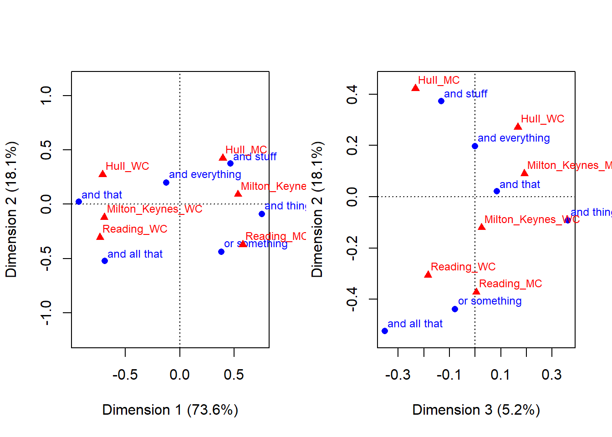
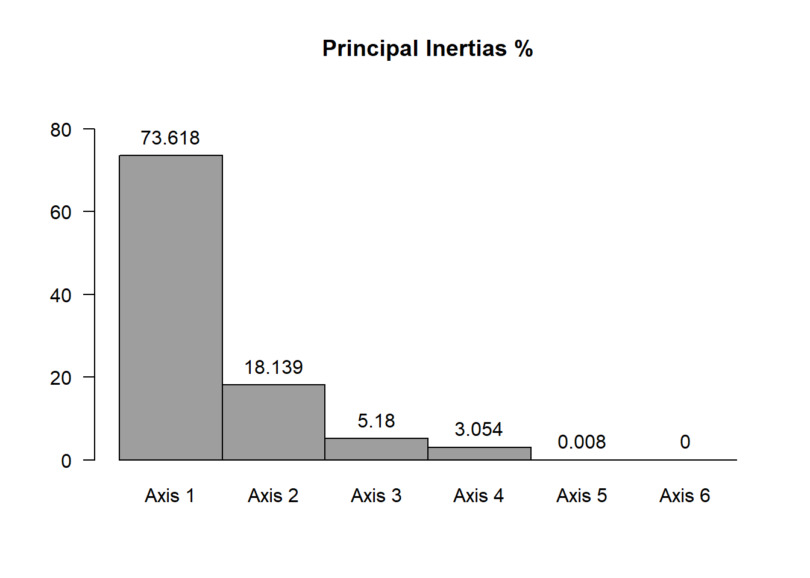
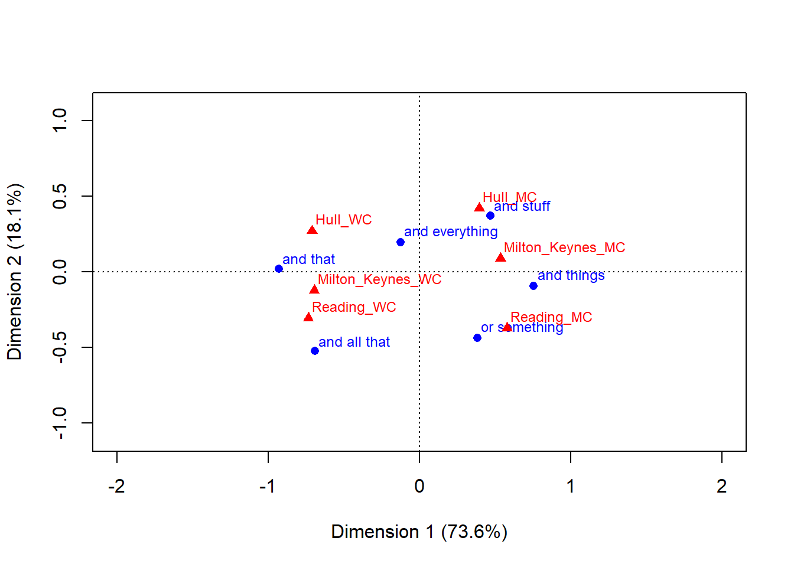
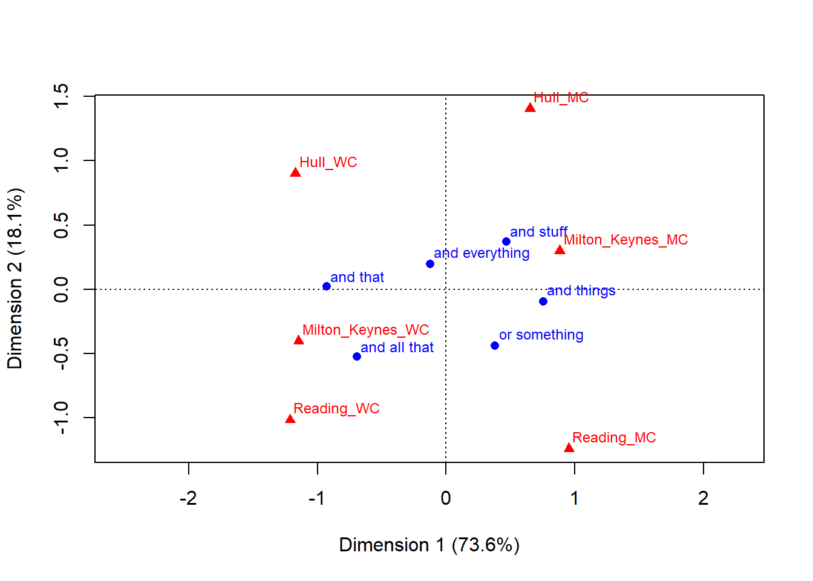
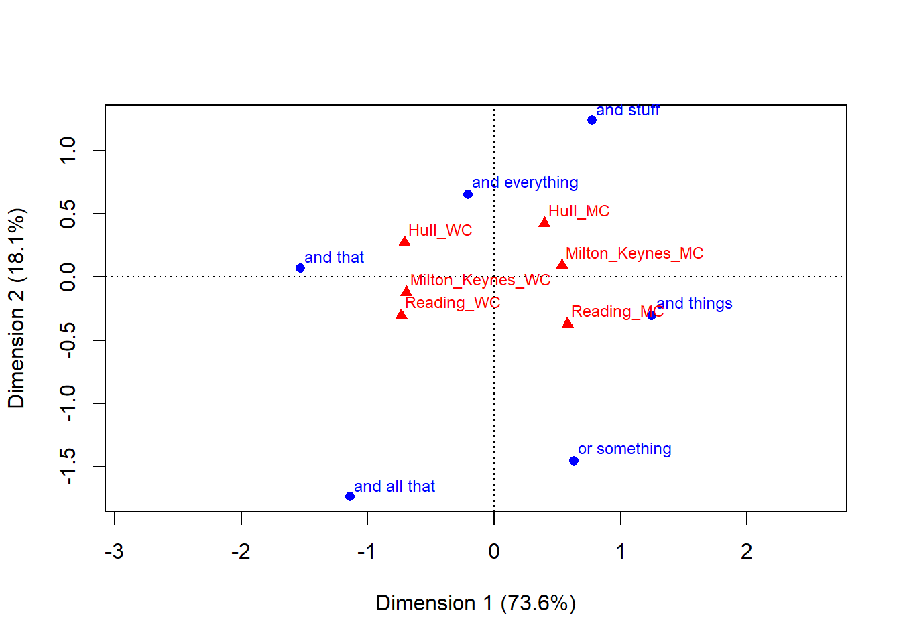

ca
package
This notebook has been created for the Exploratory Data Analysis Advanced Course at Linguistic Data Science Lab, Ruhr University Bochum.
The primary aim of this notebook is to follow along the mathematical
foundations of correspondence analysis. We “manually” calculate all
coordinates and summary statistics and compare the values to the output
of pre-compiled ca-packages.
The secondary aim is to explore a case study that deals with a linguistic phenomenon - the local dialect in different social classes of English teenagers from three local cities.
Sources:
The notebook is based on the following sources:
Desagulier (2017), chapter 10, see also additional materials.
The part on the mathematical foundation of CA relies on a script by Tim Bock.
Required R packages: ca,
data.table
library("ca"); library("data.table")## Warning: Paket 'ca' wurde unter R Version 4.2.2 erstelltWe use the extenders dataset following a case study as
presented in ch. 10 of Desagulier (2017). The original dataset was
recorded by Cheshire (2007) and contains frequencies for pragmatic
extenders (and that, and all that, and stuff,
and things, and everything, or
something).
General extenders are clause-final pragmatic particles appended to a word, a phrase, or a clause (Cheshire 2007, p. 156).
Their basic pattern is a conjunction (and or but) followed by a noun phrase. (Desagulier 2017:257)
The following examples (after Desagulier 2017:257) illustrate their usage:
Following Desagulier (2017), we aim to explore the use of extenders in the language of English teenagers from different social classes (working class (WC) or middle class(MC)) from three English towns (Reading, Milton-Keynes, Hull) applying correspondence analysis. The towns are located in three distinct regional locations in England. Cheshire (2007:164) argues that
“there [is] a robust socialclass distinction in the use of certain forms (. . . )”
The variables for correspondence analysis are hence pragmatic extender vs. the conflated variable Region_social class of the teenagers.
Before we take a look at the data and explore it by applying correspondence analysis, let us formulate a few research questions:
Are there geographic/social differences across the data set? And, if so, what are these differences?
Which linguistic forms have the same regional and social profiles?
What are the linguistic profiles of each region/social class with respect to general extenders?
# read rds file which stores the dataset as a single R object
extendersdata <- readRDS("df_extenders.rds")
extendersdataclass(extendersdata)## [1] "data.frame"The dataset’s format is a contingency table.
A contingency table or crosstab indicates, for two or more categorical variables, how frequently the combinations of characteristic values occur.
The frequencies in the rows are referred to as nij where i numbers the rows 1 to I (I=6) and j numbers the columns 1 to J (J=6). In the data matrix IxJ e.g. we grasp that n42 = 0.
N = extendersdata
I <- nrow(N)
J <- ncol(N)
I## [1] 6J## [1] 6N[4,2]## [1] 0The values of a variable (e.g. ‘and that’) are referred to as points (in case of ‘and that’ it is actually a row point.) Row points and column points can be depicted in a joint space in a map.
The background of performing statistical tests is that we want to check whether the rows and columns are not independent (this means basically whether the research question is reasonable at all), although theoretically in exploratory analyses, we would not make assumptions regarding groupings to be found.
The χ 2 test checks the significance of the overall deviation of the data in the contingency table from the independence model. It computes the contribution of each cell to χ 2 and sums up all contributions.
chisq <- chisq.test(extendersdata)## Warning in chisq.test(extendersdata): Chi-Quadrat-Approximation kann inkorrekt
## seinchisq##
## Pearson's Chi-squared test
##
## data: extendersdata
## X-squared = 384.12, df = 25, p-value < 2.2e-16[Eventually, consider a tool for converting scientific notation e.g. https://calculator.name/scientific-notation/scientific-notation-to-decimal.php]
Here, χ 2 has a high value and it is associated with very small p-value (0.00000000000000022). This implies that the row and column variables are not independent and that there is a relationship. However, the magnitude of the χ 2 value should not be interpreted as quantifying the effect of the correlation, because it depends on the sample size.
How do we know if the determined Chi-square value is a large value?
We can use statistics tables with the Chi-squared distribution to compare our values, like e.g. https://en.wikibooks.org/wiki/Engineering_Tables/Chi-Squared_Distibution. We have to check the cell for the corresponding degrees of freedom (see df=25 value in output) and the assumed significance level (e.g. 0.05.). If the calculated chi-square value is smaller than the critical value, the null hypothesis can be retained.
For an IxJ table (6x6=36), the number of degrees of freedom is given by (I-1)x(J-1) or (5x5=25)). Degrees of freedom refers to the number of values that can be varied without changing the relevant statistical parameter. For example, if you take the arithmetic mean of three values, then you can freely vary two and get the same result, the last value cannot be freely varied, because it is already determined.
\[1+2+3/3 = 2\] \[2+4+0/3 = 2\] but not \[2+4+1\]
As the most important significance levels we distinguish: 0,05 (< = 5% significant), (95%) 0,01 (< = 1% very significant), (99%) 0,001(< = 0,1% highly significant) (99,9%).
The test statistic is usually associated with a P-value which indicates the small probability (0.001 corresponds to 1 in 1000) of yet reconciling the observed frequencies with the independence hypothesis. The P-value indicates how incompatible data are with a particular statistical model: the smaller the value, the greater the incompatibility with the null hypothesis. P-values do not measure the probability that a hypothesis under investigation is true (see Wasserstein & Lazar 2016).
In general the test imposes conditions that all observations are independent and that 80+% of the expected frequencies are larger than 5.
chisq$exp## Reading_MC Reading_WC Milton_Keynes_MC Milton_Keynes_WC
## and that 39.945455 24.818182 33.800000 20.800000
## and all that 6.364935 3.954545 5.385714 3.314286
## and stuff 37.750649 23.454545 31.942857 19.657143
## and things 18.436364 11.454545 15.600000 9.600000
## and everything 30.288312 18.818182 25.628571 15.771429
## or something 36.214286 22.500000 30.642857 18.857143
## Hull_MC Hull_WC
## and that 32.618182 30.018182
## and all that 5.197403 4.783117
## and stuff 30.825974 28.368831
## and things 15.054545 13.854545
## and everything 24.732468 22.761039
## or something 29.571429 27.214286In our case, the dataset does not meet the second assumption (only 67% of the sample size is greater 5) but Greenacre (2007) argues that it can be applied . Given very small p-value, the significance of the deviation of the table from independence is not deniable.
Later on, in section 3.1, we will see how to calculate the chi-square value manually, with some more in depth discussion.
Pearson’s r is a correlation measure for the association between two random variables (x and y).
If the Pearson residual in a cell is positive/negative, then the observed frequency in that cell is greater/less than the expected frequency in that cell. Second, the more the Pearson residual deviates from 0, the stronger that effect, or, in other words, the closer the coefficient is to 0, the weaker the correlation.
chisq$res## Reading_MC Reading_WC Milton_Keynes_MC Milton_Keynes_WC
## and that -5.6873545 4.8540469 -4.2657297 5.0869365
## and all that -0.9373941 5.0515110 -1.4589105 0.3766589
## and stuff -0.2849292 -3.6040851 2.3102622 -3.3058955
## and things 3.1589191 -3.3844564 4.9117859 -3.0983867
## and everything -1.6877155 -0.6496511 -0.7167595 0.5611656
## or something 5.9466137 -0.5270463 -0.1161314 -0.4276686
## Hull_MC Hull_WC
## and that -3.9602975 6.5673614
## and all that -1.8411427 -0.3580726
## and stuff 5.6148026 -1.9467451
## and things -0.7872502 -2.3788668
## and everything 1.0591891 1.7269367
## or something -1.2084360 -4.6416586Upon inspection of the values we observe a strong effect for:
The intensity of the relationship is measured with Cramér’s V, and it is non negligible for the dataset. The perfect score of 1 is unrealistic here, as the association between the use of extenders and the socio-geographic background is not exclusive (cf. Desagulier 2017:269).
Vdif <- sqrt(chisq$stat/(sum(extendersdata) * (min(dim(extendersdata))-1)))
round(Vdif, 3)## X-squared
## 0.316See also section 3.1 for the formula how to calculate it.
Before we proceed with complex mathematical operations, let us have a first look at what a CA analysis of the dataset looks and what initial observations can be made.
Without the help of a CA graph, Cheshire (2007, p. 164) interprets the table of frequencies as follows:
Of the adjunctives, and that was preferred by the working-class speakers in all three towns, as was the less frequent and all that. The middle-class speakers, on the other hand, preferred and stuff and and things again in all three towns, though in Hull the middle-class adolescents used and stuff far more often than and things (the relatively high frequency of and stuff for the working-class group in Hull was due to just three speakers, one of whom was responsible for 10 of the 18 tokens).
Keeping in mind those observations, we will now plot the low-dimensional map resulting from the CA analysis and inspect it.
library(ca)
# performing ca with ca package
ca_ext <- ca(extendersdata, graph=F)
par(mfrow=c(1,2)) # set the plotting area into a 1*2 array
# plotting first two dimensions
plot(ca_ext, dim=c(1:2))
# and second and third dimension
plot(ca_ext, dim=c(3:2))
When we interpret the map of the first and second dimension, we find
When inspecting the second and third dimensional view zooming in a little bit, we observe that
In sum, we find that the dimension-reduction technique to represent the (dis-)similarity between variables in a map, yields insights which are in line with the interpretation of raw frequencies. For the moment, we have skipped a look at the numerical results of correspondence analysis which are equally important in interpretation, and we will turn to those when considering the mathematical foundation.
ca packageThere are different R packages for performing correspondence
analysis: throughout this notebook we use Greenacre & Nenadic’s
(2020) ca package and apply the ca() command
for simple correspondence analysis. In the output below, you will see
the existing variables of a ca-analysis object. We will load the single
predefined variables during our calculations to check whether our
manually obtained results are correct.
library(ca)
ca_validation <- ca(N)
str(ca_validation)## List of 16
## $ sv : num [1:5] 0.60601 0.30081 0.16076 0.12343 0.00644
## $ nd : logi NA
## $ rownames : chr [1:6] "and that" "and all that" "and stuff" "and things" ...
## $ rowmass : num [1:6] 0.2364 0.0377 0.2234 0.1091 0.1792 ...
## $ rowdist : num [1:6] 0.934 1.053 0.613 0.855 0.244 ...
## $ rowinertia: num [1:6] 0.2062 0.0418 0.084 0.0798 0.0107 ...
## $ rowcoord : num [1:6, 1:5] -1.534 -1.141 0.771 1.246 -0.209 ...
## ..- attr(*, "dimnames")=List of 2
## .. ..$ : chr [1:6] "and that" "and all that" "and stuff" "and things" ...
## .. ..$ : chr [1:5] "Dim1" "Dim2" "Dim3" "Dim4" ...
## $ rowsup : logi(0)
## $ colnames : chr [1:6] "Reading_MC" "Reading_WC" "Milton_Keynes_MC" "Milton_Keynes_WC" ...
## $ colmass : num [1:6] 0.219 0.136 0.186 0.114 0.179 ...
## $ coldist : num [1:6] 0.694 0.841 0.593 0.731 0.624 ...
## $ colinertia: num [1:6] 0.1058 0.0964 0.0653 0.0611 0.0699 ...
## $ colcoord : num [1:6, 1:5] 0.955 -1.214 0.883 -1.149 0.651 ...
## ..- attr(*, "dimnames")=List of 2
## .. ..$ : chr [1:6] "Reading_MC" "Reading_WC" "Milton_Keynes_MC" "Milton_Keynes_WC" ...
## .. ..$ : chr [1:5] "Dim1" "Dim2" "Dim3" "Dim4" ...
## $ colsup : logi(0)
## $ N : int [1:6, 1:6] 4 4 36 32 21 72 49 14 6 0 ...
## $ call : language ca.matrix(obj = as.matrix(obj))
## - attr(*, "class")= chr "ca"We can also print a condensed summary of the analysis’ results with
summary where variables are abbreviated in the output. We
will explain the values’ significance in short.
# print summary
summary(ca_validation)##
## Principal inertias (eigenvalues):
##
## dim value % cum% scree plot
## 1 0.367243 73.6 73.6 ******************
## 2 0.090489 18.1 91.8 *****
## 3 0.025842 5.2 96.9 *
## 4 0.015235 3.1 100.0 *
## 5 4.2e-050 0.0 100.0
## -------- -----
## Total: 0.498851 100.0
##
##
## Rows:
## name mass qlt inr k=1 cor ctr k=2 cor ctr
## 1 | andtht | 236 991 413 | -930 991 556 | 21 1 1 |
## 2 | andl | 38 677 84 | -691 431 49 | -523 247 114 |
## 3 | ands | 223 951 168 | 467 581 133 | 373 370 343 |
## 4 | andthn | 109 791 160 | 755 779 169 | -92 12 10 |
## 5 | andv | 179 923 21 | -126 269 8 | 197 654 77 |
## 6 | orsm | 214 946 153 | 381 408 85 | -438 538 454 |
##
## Columns:
## name mass qlt inr k=1 cor ctr k=2 cor ctr
## 1 | R_MC | 219 983 212 | 579 695 200 | -373 288 337 |
## 2 | R_WC | 136 898 193 | -736 766 201 | -306 132 141 |
## 3 | M_K_M | 186 836 131 | 535 813 145 | 90 23 17 |
## 4 | M_K_W | 114 934 122 | -696 907 151 | -121 27 18 |
## 5 | H_MC | 179 858 140 | 395 400 76 | 422 458 354 |
## 6 | H_WC | 165 952 201 | -711 831 227 | 271 121 134 |Before we start with the mathematical calculations to obtain observed proportions, we need to transform the raw frequencies in the contingency table, e.g. by adding the margin totals.
We create the row sums (rowSums) and column sums
(colSums) of N, bind them to the margins of the original
table and name the additional row and column.
N_total = rbind(N, colSums(N))
N_total = cbind(N_total, rowSums(N_total))
rownames(N_total)[7] <- "columntotal"
colnames(N_total)[7] <- "rowtotal"
N_totalIn this step, we transform the frequencies of the contingency table into proportions.
Therefore, we first need the total frequency n of all observed
instances in table N which can be obtained by applying the
function sum() to the table.
n <- sum(N)
n## [1] 770Next, we create the table with the observed proportions
P through the following formula. To calculate the
correspondence matrix of relative frequencies pij,
frequencies are divided by the total frequency n.
P <- N/n
PIn this section we will understand the important concepts of profiles and masses.
A row, or a column of a contingency table in which elements have been divided by the row sums or column sums respectively. Profiles are visualized as points in space by correspondence analysis.(cf. Hautz & Bleuel 2018:221)
For the next step, we note that profiles are obtained by creating relative frequencies from the marginal sums instead of dividing them by the total frequency n.
Considering the row sums, we obtain relative frequencies for the rows, that make the profile for each row point.
The row profile for the row point ‘and that’ across the
social-geographical groups of teenagers is determined in the following
way: We divide the count in each cell in the row by the row sum in
N_total of the respective row.
The calculations inside the first row are the following: \[4 : 182, 49:182, 9:182, 44:182, 10:182, 66:182\]
N[1,1]/N_total[1,7]## [1] 0.02197802N[1,2]/N_total[1,7]## [1] 0.2692308N[1,3]/N_total[1,7]## [1] 0.04945055N[1,4]/N_total[1,7]## [1] 0.2417582N[1,5]/N_total[1,7]## [1] 0.05494505N[1,6]/N_total[1,7]## [1] 0.3626374The percentages are used to normalize the row totals to the value 1, so that the rows can now be compared with each other regardless of the frequency of their absolute mentions.
The first value of the row profile indicates that the extender ‘and that’ is in 2% used by ‘Reading_MC’ teenagers.
Matrix of row profiles or profiles of extenders
To obtain the row profiles for the complete table we use the
sweep() function which is similar to
apply().
sweep(x, MARGIN, STATS, FUN) applies an operation to a
data matrix over the rows or over the columns. The parameter
MARGIN =1 sweeps over the rows, while
MARGIN =2 sweeps over the columns. STATS is the value used
in the operation (e.g. 2), FUN is the type of operation (e.g. +, -).
# sweep function divides each element of the matrix N by the sum of its respective row
# 1: The margin over which the operation is applied. 1 indicates rows, and 2 would indicate columns
# "/" indicates division operation
row.profiles = sweep(N, 1, (rowSums(N)), "/")
row.profilesNote: apply() (returns a vector, array or a list of
values by applying a function to the margins of an array (data object
with possibly more than two dimensions) or of a matrix);
The average row of the matrix of row profiles can be
determined by the column totals of the table of margin totals
N_Total divided by the total frequency n.
# calculatin averages
row.averages <- c(N_total[7,1]/n, N_total[7,2]/n, N_total[7,3]/n, N_total[7,4]/n, N_total[7,5]/n, N_total[7,6]/n)
# appending the averages to a new row
row.profiles.av <- rbind(row.profiles, row.averages)
# and naming the row
rownames(row.profiles.av) [7] <- "average row profile"
row.profiles.avThe average row profile tells us that irrespective of the chosen extender 21% of the usages are attributed to ‘Reading_MC’, 13% to ‘Reading_WC’, 18% to ‘Milton_Keynes_MC’, 11% to ‘Milton_Keynes_WC’, 17% to ‘Hull_MC’ and 16% to ‘Hull_WC’ teenagers. In this way, we can compare the profiles of extenders to each other or to the average row. The use of the extender ‘and that’ e.g. lies below the average row profile in case of ‘Reading_MC’, ‘Milton_Keynes_MC’ and ‘Hull_MC’, and above the average row profile in case of ‘Reading_WC’, ‘Milton_Keynes_WC’ and ‘Hull_WC’.
Considering the column sums, we obtain relative frequencies for the columns, that make the profile for each column point . For example for the first column:
N_total[1,1]/N_total[7,1]## [1] 0.02366864N_total[2,1]/N_total[7,1]## [1] 0.02366864N_total[3,1]/N_total[7,1]## [1] 0.2130178N_total[4,1]/N_total[7,1]## [1] 0.1893491N_total[5,1]/N_total[7,1]## [1] 0.1242604N_total[6,1]/N_total[7,1]## [1] 0.4260355Matrix of column profiles, or profiles of social-geographical groups of teenagers
# sweep operation on columns
col.profiles = sweep(N, 2, (colSums(N)), "/")
col.profilesFrom the column profile we grasp that in the group of ‘Reading_MC’ teenagers, the extender ‘and that’ was used in 2%, ‘and all that’ in 2%, ‘and stuff’ in 21%, ‘and things’ in 18%, ‘and everything’ in 12% and ‘or something’ in 42% of cases.
We again add the average column profile to the table in the last column.
# calculate averages
col.averages <- c(N_total[1,7]/n, N_total[2,7]/n, N_total[3,7]/n, N_total[4,7]/n, N_total[5,7]/n, N_total[6,7]/n)
# append averages to new column
col.profiles.av <- cbind(col.profiles, col.averages)
# name column
colnames(col.profiles.av) [7] <- "average column profile"
col.profiles.avFrom the average column profile we can read that irrespective of the social-geographical groups, 23% of the instances are ‘and that’, 3% ‘and all that’, 22% ‘and stuff’, 10% ‘and things’, 17% ‘and everything’, 21% ‘or something’. We can compare the profiles of social-geographical groups to each other or to the average column.
The use in the group of ‘Hull_WC’ e.g. is above the average column for ‘and that’ and ‘and everything’, and below the average column for extenders ‘and all that’, ‘and stuff’, ‘and things’, ‘or something’.
One can argue from the point of view of the row or column profiles and reach the same conclusions (symmetric view). However, the data tables are sometimes considered asymmetrically as a set of rows or set of columns, depending on the interest.
The information from both tables can be used to calculate the contingency ratios (cf. Greenacre 2007:11): those are formed from a row profile element and the corresponding average row profile or from a column profile element and the corresponding average column profile. Look at the code below for the different ways to obtain the equal ratios. In the interpretation, the ratio of ‘and things’ and ‘Reading_MC’ e.g. says that the combination occurs 1.7 times as much compared to the average.
sweep(row.profiles, 2,row.averages, "/")sweep(col.profiles, 1,col.averages, "/")The calculated profiles are relevant for the geometrical representation as the following quotes by Greenacre (2007) are pointing towards:
Profiles consisting of m elements can be plotted as points in an m-dimensional space. Because their m elements add up to 1, these profile points occupy a restricted region of this space. This region is an (m–1)-dimensional subspace known as a simplex. This simplex is enclosed within the edges joining all pairs of the m unit vectors on the m perpendicular axes. These unit points are also called the vertices of the simplex or profile space. The coordinate system within this simplex is known as the barycentric coordinate system. (Greenacre 2007:16)
Simplex: a triangle in two dimensions, a tetrahedron in three dimensions, and generalizations of these geometric figures in higher dimensions; in CA J-dimensional profiles lie inside a simplex defined by J vertices in (J − 1)- dimensional space. (Greenacre 2007:265f.)
The next step is to look at the concept of masses which are used as weights in correspondence analysis.
Row sums or column sums divided by the total frequency of the contingency table.
(cf. Hautz & Bleuel 2018:221)
The sum of rows and columns of the table with the proportions is referred to as mass.
We calculate the column masses column.masses by
applyingcolSums()to the table of proportions.
Pcolumn.masses = colSums(P)
column.masses## Reading_MC Reading_WC Milton_Keynes_MC Milton_Keynes_WC
## 0.2194805 0.1363636 0.1857143 0.1142857
## Hull_MC Hull_WC
## 0.1792208 0.1649351In the same way, we calculate row masses row.masses by
using rowSums():
row.masses = rowSums(P)
row.masses## and that and all that and stuff and things and everything
## 0.23636364 0.03766234 0.22337662 0.10909091 0.17922078
## or something
## 0.21428571In the next step, we want to add the masses to the corresponding profiles. The row profile already contains the average row profile in the last row, and we want to add the row mass as a new last column. The column profile, on the other hand, contains the average column profile as a last column and we want to add the column masses as the last row in the table.
In order to arrive at the same number of rows and columns we have to add NA values, because we don’t calculate a mass value for the average row profile and average column profile.
row.masses.na <-c(row.masses[0:6],NA)
row.masses.na## and that and all that and stuff and things and everything
## 0.23636364 0.03766234 0.22337662 0.10909091 0.17922078
## or something
## 0.21428571 NAcolumn.masses.na <- c(column.masses[0:6], NA)
column.masses.na## Reading_MC Reading_WC Milton_Keynes_MC Milton_Keynes_WC
## 0.2194805 0.1363636 0.1857143 0.1142857
## Hull_MC Hull_WC
## 0.1792208 0.1649351 NARemember, as the last row of the row profile we added the column sums of the correspondence matrix (P); the column sums make the average row profile and are actually identical to the column masses.
row.averages## [1] 0.2194805 0.1363636 0.1857143 0.1142857 0.1792208 0.1649351as.numeric(column.masses[1:6])## [1] 0.2194805 0.1363636 0.1857143 0.1142857 0.1792208 0.1649351Also, the values of the average column profile are the same as the row masses:
col.averages## [1] 0.23636364 0.03766234 0.22337662 0.10909091 0.17922078 0.21428571as.numeric(row.masses[1:6])## [1] 0.23636364 0.03766234 0.22337662 0.10909091 0.17922078 0.21428571The average row profile is the centroid of the row points in the correspondence space. This does not mean the “geographic” center, but a weighted average so that the centroid is closer to points with greater weight.
Centroid: the weighted average point (Greenacre 2007:263)
For the geometrical representation this means:
There is an equivalent way of thinking about the positions of the profile points in the profile space which is based on the notion of a weighted average, or centroid, of a set of points. In the calculation of an ordinary (unweighted) average, each point receives equal weight. A weighted average, on the other hand, allows different weights to be associated with each point. When points are weighted differently, then the centroid does not lie exactly at the “geographical” centre of the cloud of points, but tends to lie in a position closer to the points with higher weight.(cf. Greenacre 2007:17)
We are now in the position to add masses to the corresponding profiles:
row.profiles.av.mass <- cbind(row.profiles.av,row.masses.na)
colnames(row.profiles.av.mass) [7] <- "row.masses"
row.profiles.av.massThe masses of the rows together form the average column profile. This is the centroid of the column points in the correspondence space. We also append the column masses (the row sums of the correspondence matrix P) to the column profile.
col.profiles.av.mass <- rbind(col.profiles.av, column.masses.na)
rownames(col.profiles.av.mass)[7] <- "col.masses"
col.profiles.av.massValues of the row representation can be seen as weighted values of the column representation and the values of the column representation can be seen as weighted values of the row representation. For illustration, consider that a cell value is multiplied by the mass and divided by the average row (within a profile).
As an example we like to go from row profile [1,1] to column profile [1,1]. To do so we multiply the cell of the row profile by the row mass and divide by the average row. This results in the cell of the column profile. (Alternative: cell of the row profile multiplied by row mass divided by column mass of the column profile) \[0.02197802*0.2363636/0.2194805 = 0.02366864\]
View of both profiles
row.profiles.av.masscol.profiles.av.massCalculation with relevant columns of the profile
row.profiles.av.mass[1,1]*row.profiles.av.mass[1,7]/row.profiles.av.mass[7,1]## [1] 0.02366864row.profiles.av.mass[1,1]*row.profiles.av.mass[1,7]/col.profiles.av.mass[7,1]## [1] 0.02366864col.profiles.av.mass[1,1]## [1] 0.02366864To practise a little bit more, let’s assume we want to go from column profile [1,1] to row profile [1,1]: Therefore, the cell of the column profile is multiplied by the column mass and divided by the average column, so we obtain the cell of the row profile. (Alternatively, cell of the column profile multiplied by column mass divided by row mass)
\[0.02366864*0.2194805/0.2363636 =0.02197802\]
The code below illustrates the calculation.
col.profiles.av.mass[1,1]*col.profiles.av.mass[7,1]/col.profiles.av.mass[1,7]## [1] 0.02197802col.profiles.av.mass[1,1]*col.profiles.av.mass[7,1]/row.profiles.av.mass[1,7]## [1] 0.02197802row.profiles.av.mass[1,1]## [1] 0.02197802The same holds for average profiles of rows and columns, but first let’s view both profiles again.
row.profiles.av.masscol.profiles.av.massTo calculate the 1st value of the average row profile, we multiply the components from the table of the row profile in the 1st column by the corresponding values of the average column profile and sum them up:
\[(0.02197802*0.23636364) + (0.13793103*0.03766234) + (0.20930233*0.22337662) + (0.38095238* 0.10909091) + (0.15217391*0.17922078) + (0.43636364*0.21428571) = 0.21948052 \]
sum(row.profiles.av.mass[1:6 ,1]*col.profiles.av.mass[1:6,7])## [1] 0.2194805row.profiles.av.mass[7,1]## [1] 0.2194805To practise, let’s calculate the 1st value of the average column profile. Therefore, components from the table of the 1st row column profile are multiplied by the corresponding values of the average row profile and summed up
\[(0.02366864*0.21948052) + (0.46666667*0.13636364) + (0.06293706*0.18571429) + (0.50000000*0.11428571) + (0.072463768*0.17922078) + (0.51968504*0.16493506) = 0.2363636\]
The calculation in R looks the following:
sum(col.profiles.av.mass[1,1:6]*row.profiles.av.mass[7,1:6])## [1] 0.2363636col.profiles.av.mass[1,7]## [1] 0.2363636For the validation of calculated row and column masses, see Sec. 7.1.
Referring back to Table P with the proportions, e.g. 0.5% of the examples correspond to the extender ‘and that’ in the social-geographical group ‘Reading_MC’.
PFor an estimation about whether this value is large or small, we can calculate the value we expect if we assume that there is no relationship between extender and social-geographical group.
From the sums calculated, we know that 23% of the extenders are ‘and that’ (row mass) and that 21% are in the social-geographical group ‘Reading MC’ (column mass). If there is no relationship between extender and social-geographical group, we expect that 21% of 23% of examples ( 0.051 = 5.1%) are the extender ‘and that’ in the social-geographical group ‘Reading MC’.
row.masses## and that and all that and stuff and things and everything
## 0.23636364 0.03766234 0.22337662 0.10909091 0.17922078
## or something
## 0.21428571column.masses## Reading_MC Reading_WC Milton_Keynes_MC Milton_Keynes_WC
## 0.2194805 0.1363636 0.1857143 0.1142857
## Hull_MC Hull_WC
## 0.1792208 0.1649351The expected proportion is calculated by multiplying the column and row masses: \[0.23636364*0.2194805 = 0.05187721 \]
column.masses[1] * row.masses[1] ## Reading_MC
## 0.05187721%o% is used to create a table so that for each cell the
corresponding row masses and column masses are multiplied. The result is
table E
E = row.masses %o% column.masses
E## Reading_MC Reading_WC Milton_Keynes_MC Milton_Keynes_WC
## and that 0.051877214 0.032231405 0.043896104 0.027012987
## and all that 0.008266149 0.005135773 0.006994434 0.004304267
## and stuff 0.049026817 0.030460449 0.041484230 0.025528757
## and things 0.023943329 0.014876033 0.020259740 0.012467532
## and everything 0.039335470 0.024439197 0.033283859 0.020482375
## or something 0.047031540 0.029220779 0.039795918 0.024489796
## Hull_MC Hull_WC
## and that 0.042361275 0.03898465
## and all that 0.006749874 0.00621184
## and stuff 0.040033733 0.03684264
## and things 0.019551358 0.01799292
## and everything 0.032120088 0.02955979
## or something 0.038404453 0.03534323Frequencies to be expected if there is no correlation between the characteristics under consideration (null hypothesis of independence, homogeneity assumption). (cf. Hautz & Bleuel 2018: S. 220)
Relative to the total frequency of n examples, each of which has a probability of 0.05187721 of exhibiting the combination of ‘and that’ and ‘Reading_MC’, n* the probability of examples are expected.
We obtain the expected frequencies by multiplying the expected proportions by the total frequency.
Ew = E*n
Ew## Reading_MC Reading_WC Milton_Keynes_MC Milton_Keynes_WC
## and that 39.945455 24.818182 33.800000 20.800000
## and all that 6.364935 3.954545 5.385714 3.314286
## and stuff 37.750649 23.454545 31.942857 19.657143
## and things 18.436364 11.454545 15.600000 9.600000
## and everything 30.288312 18.818182 25.628571 15.771429
## or something 36.214286 22.500000 30.642857 18.857143
## Hull_MC Hull_WC
## and that 32.618182 30.018182
## and all that 5.197403 4.783117
## and stuff 30.825974 28.368831
## and things 15.054545 13.854545
## and everything 24.732468 22.761039
## or something 29.571429 27.214286Alternatively, we can also calculate the expected frequency for cell ij as we practise now.
We multiply row sum i from table N with the column sum j from table N and divide by n.
rowSums(N) %o% colSums(N)/n## Reading_MC Reading_WC Milton_Keynes_MC Milton_Keynes_WC
## and that 39.945455 24.818182 33.800000 20.800000
## and all that 6.364935 3.954545 5.385714 3.314286
## and stuff 37.750649 23.454545 31.942857 19.657143
## and things 18.436364 11.454545 15.600000 9.600000
## and everything 30.288312 18.818182 25.628571 15.771429
## or something 36.214286 22.500000 30.642857 18.857143
## Hull_MC Hull_WC
## and that 32.618182 30.018182
## and all that 5.197403 4.783117
## and stuff 30.825974 28.368831
## and things 15.054545 13.854545
## and everything 24.732468 22.761039
## or something 29.571429 27.214286We have applied the statistical test before using the
chisq()function, but now, we will see how to calculate it
ourselves.
chi-square statistic — the statistic used commonly for testing the indepedence model for a contingency table; calculated as the sum of squared differences between observed frequencies and frequencies expected according to the model, each squared difference being divided by the corresponding expected frequency. (Greenacre 2007:264)
To calculate the value, we square the difference of the absolute observed and expected frequencies, divide by the expected frequencies and sum all values.
\[\chi^2 = \sum \frac {(observed - expected)^2}{expected}\]
cf. Greenacre (2007:27)
In the formula below, we have to insert frequencies from table N and expected frequencies from table Ew.
\[ \chi^2 = \sum^{I}_{i=1} \sum^{J}_{j=1}\frac{(n_{ij}- \hat{n}_{ij})^2}{\hat{n}_{ij}} = \frac {(4-39.945455)^2}{39.945455}+ \frac{(49 - 24.818182)^2}{24.818182}+...\] cf. Blasius 2001:25. (n with hat corresponds to expected frequency)
chi2 <- sum((N-Ew)^2/Ew)
chi2## [1] 384.1155The larger the Chi-squared value (number of rows and columns constant), the larger the weighted squared deviations between observed and expected values. This means we are less confident that the hypothesis of independence is true and the more likely we are going to reject it.
What is the maximum value of Chi-square?
The maximum Chi-square value is equal to the number of cases multiplied by the minimum of rows and columns minus one.
(cf. Blasius 2001:26)
nrow(N)## [1] 6ncol(N)## [1] 6n*(ncol(N)-1)## [1] 3850We can check the result of our calculation with the implemented
function: chisq.test() which will also provide the
p-value.
x2_N.test <- chisq.test(N, correct = F)## Warning in chisq.test(N, correct = F): Chi-Quadrat-Approximation kann inkorrekt
## seinx2_N.test##
## Pearson's Chi-squared test
##
## data: N
## X-squared = 384.12, df = 25, p-value < 2.2e-16Because of the problems emerging for Chi-squared test from the dependence on the number of cases and from the impact of the table size, coefficients like Cramer’s V have been proposed. The formula is the following:
\[ V = \sqrt{\frac{\chi^2}{n * (min(I-1, J-1)}} \] cf. Blasius 2001:26.
Cramer’s V can take values between 0 (no correlation) and 1 (perfect correlation).
nrow(N)## [1] 6ncol(N)## [1] 6(min(dim(extendersdata))-1)## [1] 5chi2## [1] 384.1155CramersV<-sqrt(x2_N.test$stat/(sum(extendersdata) * (min(dim(extendersdata))-1)))
CramersV## X-squared
## 0.3158643In correspondence analysis, a coefficient is determined analogously to Cramer’s V.
To determine the total inertia (how much variation is present in the data), the Chi-squared value is divided by the total sum of the table or grand total.
\[\lambda_G = \frac{\chi^2}{n}= \frac{384.1155}{770}\]
total.inertia = chi2/n
total.inertia## [1] 0.4988513Sum of squared Chi2 distances of a set of profiles to their centroid weighted by the masses of the profiles. (Hautz & Bleuel 2018:222)
Alternatively, the total inertia weight is also obtained from the squared deviations of expected and observed profile elements, weighted by the corresponding average row and column profile elements.
The concept of distance or (dis-)similary between variables in a correspondence analysis map is based on the chi-squared distance: the smaller Chi-squared distance between two profiles, the more similar they are.
Chi-squared distance: weighted Euclidean distance measure between profiles, where each squared difference between profile elements is divided by the corresponding element of the average profile.
(cf. Greenacre 2007:263)
In the profile space, which is calculated later, the greater the Chi-squared distance of a profile from the average profile, the greater the distance of the corresponding point from the origin of the coordinate system in the profile space. Also, the greater the Chi-squared distance between two profiles, the greater the distance in space. Chi-squared distance are defined only between two row profiles or two column profiles (as well as those to the average profile). But not between row profiles and column profiles.
Note: If you are interested, you may consider a discussion of Breitung (2023) criticizing some undesirable features of chi-squared distance when applied in correspondence analysis.
For the calculation we start by summing the squared deviations of observed and expected values of the individual cells, and divide by the respective expected values.
Chi-squared distance between row profiles (cf. Greenacre p.31) aij : the jth element of the row profile of row i; cj : the mass of the jth column.
\[\sqrt {\sum_j{\frac{(a_{ij}-a_{i'j})^2}{c_j}}}\]
If you compare it to the formula for Eucledean distance you see the difference in that the former uses weighting:
\[\sqrt {\sum_j{(a_{ij}-a_{i'j})^2}}\]
Chi-squared distance between column profiles bij - the i.th element of the column profile of column j; ri: the mass of the i.th row
\[\sqrt {\sum_i{\frac{(b_{ij}-b_{ij'})^2}{r_i}}}\]
Chi-squared distance between row profile and average row profile
\[\sqrt {\sum_j{\frac{(a_{ij}-c_j)^2}{c_j}}}\]
Chi-squared distance between column profile and average column profile
\[\sqrt {\sum_i{\frac{(b_{ij}-r_i)^2}{r_i}}}\]
Let’s illustrate the calculation of the chi-squared distance from the first row of the row profile (‘and that’) to the average row or to the centroid of the row profile (Z)
# Calculate the squared differences and divide by column profiles
diff1 <- (row.profiles.av.mass[1,1] - col.profiles.av.mass[7,1])^2 / col.profiles.av.mass[7,1]
diff2 <- (row.profiles.av.mass[1,2] - col.profiles.av.mass[7,2])^2 / col.profiles.av.mass[7,2]
diff3 <- (row.profiles.av.mass[1,3] - col.profiles.av.mass[7,3])^2 / col.profiles.av.mass[7,3]
diff4 <- (row.profiles.av.mass[1,4] - col.profiles.av.mass[7,4])^2 / col.profiles.av.mass[7,4]
diff5 <- (row.profiles.av.mass[1,5] - col.profiles.av.mass[7,5])^2 / col.profiles.av.mass[7,5]
diff6 <- (row.profiles.av.mass[1,6] - col.profiles.av.mass[7,6])^2 / col.profiles.av.mass[7,6]
# Sum the differences and take the square root
d2_andthat_av <- sqrt(diff1 + diff2 + diff3 + diff4 + diff5 + diff6)
d2_andthat_av## [1] 0.9340781Note we could also use a shorter alternative (inelegant) solution with a loop:
For j, we loop from 1 to the last number of dimensions from our table N (6) along the row profile and subtract in the first row for all columns 1-6 from the cell value the column mass of the respective column, square this and divide by the column mass of the respective column. From the values summed in chidist, we take the root. (cf. Greenacre 2007:218)
chidist <- 0
for(j in 1:dim(N) [2]){
chidist <- chidist+(row.profiles.av.mass[1,j]-column.masses[j])^2/column.masses[j]
}
sqrt(chidist)## Reading_MC
## 0.9340781Chi-squared distance between first (‘and that’) and second row (‘and all that’) of the row profile.
# Calculate the squared differences and divide by column profiles
diff1 <- (row.profiles.av.mass[1,1] - row.profiles.av.mass[2,1])^2 / col.profiles.av.mass[7,1]
diff2 <- (row.profiles.av.mass[1,2] - row.profiles.av.mass[2,2])^2 / col.profiles.av.mass[7,2]
diff3 <- (row.profiles.av.mass[1,3] - row.profiles.av.mass[2,3])^2 / col.profiles.av.mass[7,3]
diff4 <- (row.profiles.av.mass[1,4] - row.profiles.av.mass[2,4])^2 / col.profiles.av.mass[7,4]
diff5 <- (row.profiles.av.mass[1,5] - row.profiles.av.mass[2,5])^2 / col.profiles.av.mass[7,5]
diff6 <- (row.profiles.av.mass[1,6] - row.profiles.av.mass[2,6])^2 / col.profiles.av.mass[7,6]
# Sum the differences and take the square root
d2_andthat_andallthat <- sqrt(diff1 + diff2 + diff3 + diff4 + diff5 + diff6)
d2_andthat_andallthat## [1] 0.8946881For the calculation of all Chi-squared distances we can use the
following function: dist() calculates as default a
Euclidean distance matrix between the rows of a matrix. The options set
for sweep() are 2 (move down the columns), the root of the
column masses is used as a vector, and the operation used is division
(cf. Greenacre 2007:219).
dist.matrix.row <- dist(sweep(row.profiles.av, 2, sqrt(column.masses), FUN="/"))
dist.matrix.row## and that and all that and stuff and things and everything
## and all that 0.8946881
## and stuff 1.4578076 1.5483608
## and things 1.7194114 1.7024741 0.7460265
## and everything 0.8281350 1.1244819 0.6408689 1.0190857
## or something 1.4017662 1.2617283 0.8305088 0.7225154 0.8184297
## average row profile 0.9340781 1.0534800 0.6130969 0.8552202 0.2438114
## or something
## and all that
## and stuff
## and things
## and everything
## or something
## average row profile 0.5971736ca_validation$rowdist## [1] 0.9340781 1.0534800 0.6130969 0.8552202 0.2438114 0.5971736In the above output you can compare the row chi-squared distances to
the centroid (average row profile) to the retrieved solution from the ca
package: $rowdist. Note that distances are only defined
between rows (and average row).
Now, let’s analogously move on to the Chi-squared distance between column profiles: we calculate it for the sake of illustration for the 1st column (Reading_MC) and average column profile or centroid of the column profile:
# Calculate the squared differences and divide by row profiles
diff1 <- (col.profiles.av.mass[1,1] - row.profiles.av.mass[1,7])^2 / row.profiles.av.mass[1,7]
diff2 <- (col.profiles.av.mass[2,1] - row.profiles.av.mass[2,7])^2 / row.profiles.av.mass[2,7]
diff3 <- (col.profiles.av.mass[3,1] - row.profiles.av.mass[3,7])^2 / row.profiles.av.mass[3,7]
diff4 <- (col.profiles.av.mass[4,1] - row.profiles.av.mass[4,7])^2 / row.profiles.av.mass[4,7]
diff5 <- (col.profiles.av.mass[5,1] - row.profiles.av.mass[5,7])^2 / row.profiles.av.mass[5,7]
diff6 <- (col.profiles.av.mass[6,1] - row.profiles.av.mass[6,7])^2 / row.profiles.av.mass[6,7]
# Sum the differences and take the square root
d2_ReadMC_av <- sqrt(diff1 + diff2 + diff3 + diff4 + diff5 + diff6)
d2_ReadMC_av## [1] 0.694421In order to calculate the distance matrix for columns by using
dist() and sweep(), we transpose the matrix of
the column profiles. Below you can verify the correct result and compare
it to the output of the $coldist variable from the ca object.
col.profiles.av.t <- t(col.profiles.av)
dist.matrix.col <- dist(sweep(col.profiles.av.t, 2, sqrt(row.masses), FUN="/"))
dist.matrix.col## Reading_MC Reading_WC Milton_Keynes_MC Milton_Keynes_WC
## Reading_WC 1.3602863
## Milton_Keynes_MC 0.5536544 1.3840590
## Milton_Keynes_WC 1.3036111 0.4743091 1.3026568
## Hull_MC 0.8517939 1.3650940 0.5849334 1.2550407
## Hull_WC 1.4516556 0.7143889 1.2722161 0.4429410
## average column profile 0.6944210 0.8407669 0.5931724 0.7311693
## Hull_MC Hull_WC
## Reading_WC
## Milton_Keynes_MC
## Milton_Keynes_WC
## Hull_MC
## Hull_WC 1.1855142
## average column profile 0.6243938 0.7798374ca_validation$coldist## [1] 0.6944210 0.8407669 0.5931724 0.7311693 0.6243938 0.7798374Residuals, standardized residuals: Residuals are the differences between observed and expected frequencies. The standardized residual in row ij is obtained by dividing the residual by the square root of the expected frequency of the cell. Correspondence analysis uses standardized residuals converted to proportion values. (cf. Hautz & Bleuel 2018: 221)
The residuals are calculated by subtracting the expected proportions from the observed proportions. Normally, residuals are calculated in statistics to determine the magnitude of error in a model.
In correspondence analysis, this is different; the focus is on examining the residuals. They quantify the difference between the observed data and what we would expect if there were no relationship between row and column categories.
R = P - E
RThe examples in the categories ‘and that’ and ‘Reading_WC’ show a high residual value of 0.031. The observed proportion was about 6.3% which is 3% higher than the expected value of 3.2% assuming that there is no relationship between categories.
P[1,2]## [1] 0.06363636E[1,2]## [1] 0.0322314R[1,2]## [1] 0.03140496This suggests that in the example sentences of ‘and that’ and ‘Reading_WC’ it is more likely that the extender is used than in the average sentence.
The standardized residual Z provides a weighting of the SVD (Singular Value Decomposition). Cells with a higher expected proportion are given a greater weight in the data. The expected values are related to the data set size. The weighting means that smaller cells in the table, for which the sampling error will be larger, are weighted lower. This makes the correspondence analysis relatively robust in dealing with outliers caused by sampling error when the table is analyzed as a contingency table.
Formula for the calculation of an element of the table of standardized residuals: Deviation of observed from expected proportions divided by the root of the expected proportions.
\[a_{ij} = \frac{(p_{ij} - r_ic_j)}{\sqrt{r_ic_j}}\] (cf. Blasius 2001:89)
Z <- R/sqrt(E)
ZIf the elements of the standardized residuals are squared, multiplied by the total frequency, and then summed, the result is Chi2 (determined earlier):
chi2.aus.res <- sum(((Z)^2)*n)
chi2.aus.res## [1] 384.1155chi2## [1] 384.1155Correspondence analysis seeks a low-dimensional subspace which should be as close as possible to all points- the points are then projected into the optimal subspace that captures as much of the variation in the data as possible.
With respect to this objective, it is necessary to define what proximity of points to the subspace means. Intuitively, one would want to find distances of all profiles to an imaginary line for which the sum of the distances is smallest (but this involves complicated mathematics).
Instead, the problem can be simplified by defining a criterion for the sum of squared distances, which is mathematically equivalent to a least-squares method for finding an optimal subspace.
In correspondence analysis, the weighted sum of squared distances is now taken as the criterion. (cf. Greenacre p. 47)
We assume i profile points in a multidimensional space and a low-dimensional subspace S as candidates for the optimal subspace. For the i.th profile point with mass mi we calculate the distance between the point and S denoted by di(S). The proximity of the profile to the subspace is mi[di(S)]2, or the squared distance weighted by the mass. The closeness of all profiles is obtained by summation.
\[closeness\:to\:S = \sum_i {m_i[d_i(S)]^2} \]
The optimal subspace must satisfy this criterion.
The computation of the solution of this problem can be achieved by the singular value decomposition, a procedure that is crucial for various methods of dimension reduction. In correspondence analysis, it is applied to the matrix of standardized residuals.
Singular value decomposition
a matrix decomposition similar to that of eigenvalues and eigenvectors, but applicable to rectangular matrices; the squares of the singular values are eigenvalues of particular square matrices, and the left and right singular vectors are also eigenvectors
A singular value decomposition is a generalization of the eigenvalue decomposition (for square matrices) and can be applied to any rectangular matrices.
The matrix is broken down into components, ordered from important to unimportant. The algebraic notion of rank of a matrix is geometrically equivalent to the notion of dimensions.
The dimensions of the optimal subspace are formed with a singular
value decomposition- for this purpose a first dimension is constructed,
which explains a maximum portion of the variation of the data. Then, a
second dimension is constructed such that it is orthogonal to the first
and again captures a maximum fraction of the remaining variation.
In this way, the SVD successively partitions the total inertia or
total inertia λG among the dimensions.
The singular value decomposition also provides the coordinates of the row and column points in space in further steps of calculation.
The decomposition of a matrix A is defined as the product of three matrices
\[A = U\:\Gamma\:V^T\]
Gamma is the diagonal matrix with singular values in descending order \[\gamma_1 \geq \gamma_2 \geq...\geq \gamma_k \geq...\ge 0\]
In a diagonal matrix, all values except the diagonal are zeros. (For the calculation in R a representation as a vector is sufficient.) The last value is in principle 0 and in the present case, this can be ignored, as well as the last columns in u and v, which are multiplied by 0.
The columns of the matrix U are called left singular vectors and those of V are called right singular vectors. The left singular vectors correspond to the rows, and the right singular vectors correspond to the columns. The matrix VT was transposed.
Calculation is done with the svd() function, the
resulting object is named SVD.
SVD = svd(Z)
rownames(SVD$u) = rownames(P)
rownames(SVD$v) = colnames(P)
SVD## $d
## [1] 6.060062e-01 3.008137e-01 1.607557e-01 1.234302e-01 6.444914e-03
## [6] 5.716227e-17
##
## $u
## [,1] [,2] [,3] [,4] [,5]
## and that -0.74581697 0.0343327 0.258408633 0.08625193 0.36331840
## and all that -0.22141071 -0.3374432 -0.424984372 -0.76097241 -0.19938988
## and stuff 0.36438129 0.5858549 -0.388772596 -0.12410007 0.36616763
## and things 0.41148888 -0.1013907 0.742380973 -0.39967833 -0.02082385
## and everything -0.08832644 0.2774550 -0.001780185 0.22830478 -0.82696443
## or something 0.29126613 -0.6741410 -0.224357864 0.43152628 0.09930197
## [,6]
## and that 0.4861724
## and all that 0.1940679
## and stuff 0.4726274
## and things 0.3302891
## and everything 0.4233448
## or something 0.4629100
##
## $v
## [,1] [,2] [,3] [,4] [,5]
## Reading_MC 0.4475758 -0.5802251 0.01198114 0.3434696 -0.35414598
## Reading_WC -0.4484272 -0.3751191 -0.42245171 -0.5842779 -0.04459817
## Milton_Keynes_MC 0.3804068 0.1294721 0.51410021 -0.5025702 0.36869699
## Milton_Keynes_WC -0.3883809 -0.1355026 0.05255666 0.5092823 0.67407932
## Hull_MC 0.2757946 0.5945829 -0.61401726 0.1161066 0.02626387
## Hull_WC -0.4764213 0.3660214 0.42108500 0.1233774 -0.53064247
## [,6]
## Reading_MC -0.4684875
## Reading_WC -0.3692745
## Milton_Keynes_MC -0.4309458
## Milton_Keynes_WC -0.3380617
## Hull_MC -0.4233448
## Hull_WC -0.4061220Each singular value and the corresponding vectors (e.g. the columns of u and v) correspond to one dimension. A property of U and V is that the columns of U are orthogonal to each other and that the columns of V are orthogonal to each other.
The squared singular values are called eigenvalues.
eigenvalues = SVD$d^2
eigenvalues## [1] 3.672435e-01 9.048886e-02 2.584241e-02 1.523503e-02 4.153691e-05
## [6] 3.267525e-33The inertia amount which is covered by a principal axis, the so-called principal inertia, with reference to the first principal axis, is also called first principal inertia. It is also often called an eigenvalue because of the way it can be calculated, as an eigenvalue of a square symmetric matrix.
The eigenvalue corresponds to the fraction of the total inertia accounted for by dimension k and is notated as λk. The sum of the eigenvalues of all dimensions is equal to the total inertia λG. The fraction of the total inertia accounted for by 1 or 100 percent dimension λk is called the eigenvalue fraction of the kth dimension (calculated by λk/λG).
[Note: K is the dimensionality of the matrix in space or rank, we also speak of factors and assign properties to the dimensions. k is the number of factors, k is also used as an index. In terms of inertia weights, we speak of a weightk as being on the kth axis, and in terms of coordinates k we speak of a coordinate on the kth factor].
The sum of the eigenvalues again gives the total inertia: (we had already determined this in 3.1.1).
inertia.sum = sum(eigenvalues)
inertia.sum## [1] 0.4988513total.inertia## [1] 0.4988513The eigenvalue components of the first dimensions are determined as follows: we divide each eigenvalue by the total inertia and express them as proportions.
prop.inertias = eigenvalues/total.inertia
prop.inertias## [1] 7.361782e-01 1.813944e-01 5.180383e-02 3.054022e-02 8.326511e-05
## [6] 6.550099e-33perc.inertias<-round(prop.inertias*100, 3)
perc.inertias## [1] 73.618 18.139 5.180 3.054 0.008 0.000Above, we have calculated that the first dimension of the correspondence analysis explains 73.6% of the variation in the data and the second explains 18.1%. The third dimension explains 5.1% and the fourth 3%.
In correspondence analysis, we usually inspect a bar chart (or similar representation) with the inertia values as percentages to check for the number of dimensions to be considered for the analysis. A rule of thumb is to look for a bow in the graph and choose the dimensions before the bow. The idea is to analyse the dimensions which can account for most variation in the data.
To create the scree-plot for the inertia values, first, the axes are counted over the length of the vector to name them. In the second step, a bar chart of the rounded inertia values in percent is created. The bars are named using the previously defined names.
For ylim, the rounded value of the largest singular
value increased by 20% is chosen as the axis maximum. With
space= the distance between the columns is determined and
las=1 labels the Y-axis horizontally. text()
gets as X-coordinate a vector containing the numbers from 1 to the
number of CA-axes or percent values, decreased by 0.5. As the
Y-coordinate the percent values are chosen. The numbers above the bars
give the percentage values.
nam <- paste("Axis", 1:length(perc.inertias))
barplot(perc.inertias, names.arg = nam, col = 8, ylim=c(0,round(max(perc.inertias)+max(perc.inertias)/5,1)),space=0, las=1)
text((1:length(perc.inertias))-0.5, perc.inertias, perc.inertias, pos=3)
title(main="Principal Inertias %", font=2) 
The principal coordinates indicate the coordinate positions of the profiles. Since the coordinates refer to the profiles on the principal axes, they are also called principal coordinates.
Coordinates of a set of points projected onto a principal axis, such that their weighted sum of squares along an axis equals the principal inertia on that axis. (cf. Greenacre 2007:265)
For the localization of the i-th row on the k-th axis/factor we calculate the product of the corresponding value of the matrix U of the left singular vectors for one row on one axis and the singular value of the k-th axis divided by the square root of the mass of the i-th row.
\[f_{ik} = u_{ik}\:\gamma_k\:/ \sqrt{r_i}\] (cf. Blasius 2001:92)
To illustrate the procedure, we calculate the values for the position of the row ‘and stuff’ on the first axis and on the second axis. Therefor we multiply the corresponding values from the matrix U of the left singular vectors and the value of the axis divided by the square root of the mass of the 3rd row.
# position on the first axis
SVD$u[3,1]*SVD$d[1]/sqrt(row.profiles.av.mass[3,7])## and stuff
## 0.4672123# position on the second axis
SVD$u[3,2]*SVD$d[2]/sqrt(row.profiles.av.mass[3,7])## and stuff
## 0.3728797The complete matrix F of principal coordinates of the rows is
calculated by using sweep again:
pro <- sweep(SVD$u, 2, SVD$d, "*")
principal.coordinates.rows <- sweep(pro, 1, (sqrt(row.masses)), "/")
principal.coordinates.rows## [,1] [,2] [,3] [,4] [,5]
## and that -0.9296489 0.02124297 0.0854443178 0.02189778 0.0048163070
## and all that -0.6913883 -0.52305167 -0.3520349827 -0.48399054 -0.0066216555
## and stuff 0.4672123 0.37287971 -0.1322340448 -0.03240968 0.0049931911
## and things 0.7549894 -0.09234246 0.3613258648 -0.14936125 -0.0004063346
## and everything -0.1264368 0.19714958 -0.0006759855 0.06656446 -0.0125895368
## or something 0.3813032 -0.43807823 -0.0779132260 0.11506209 0.0013825420
## [,6]
## and that 5.716227e-17
## and all that 5.716227e-17
## and stuff 5.716227e-17
## and things 5.716227e-17
## and everything 5.716227e-17
## or something 5.716227e-17We continue with the calculation of the principal coordinates of the columns. For the localization of the j-th column on the k-th axis/factor calculate the product of the corresponding value of the matrix V of the right singular vectors for a column on an axis and the singular value of the k-th axis divided by the root of the mass of the j-th column.
\[g_{jk} = v_{jk}\:\gamma_k / \sqrt{c_j}\] Calculation of the matrix G of principal coordinates of the columns:
pros <- sweep(SVD$v, 2, SVD$d, "*")
principal.coordinates.columns <- sweep(pros, 1, (sqrt(column.masses)), "/")
principal.coordinates.columns## [,1] [,2] [,3] [,4] [,5]
## Reading_MC 0.5789561 -0.37255986 0.004111182 0.09049235 -0.0048719343
## Reading_WC -0.7359015 -0.30557475 -0.183905315 -0.19529529 -0.0007783677
## Milton_Keynes_MC 0.5349371 0.09037559 0.191774839 -0.14394470 0.0055139654
## Milton_Keynes_WC -0.6962079 -0.12057279 0.024991843 0.18594487 0.0128508583
## Hull_MC 0.3947923 0.42248936 -0.233159382 0.03385200 0.0003998358
## Hull_WC -0.7109052 0.27111126 0.166678574 0.03749737 -0.0084209795
## [,6]
## Reading_MC -5.716227e-17
## Reading_WC -5.716227e-17
## Milton_Keynes_MC -5.716227e-17
## Milton_Keynes_WC -5.716227e-17
## Hull_MC -5.716227e-17
## Hull_WC -5.716227e-17Coordinates of a set of points such that their weighted sum of squares along an axis equals 1. (cf. Greenacre 2007:266)
The standard coordinates stand for the coordinate positions of the vertices (in geometry corner of a polygon with at least three corners). They are standardized (mean = 0, standard deviation = 1). As a reminder: the vertices define the boundaries of the profile space and correspond to extreme (weighted) profiles, the labels are identical with the variable values, but not their profiles. In six-dimensional space e.g. 1,0,0,0,0,0; 0,1,0,0,0,0; 0,0,1,0,0,0; 0,0,0,1,0,0; 0,0,0,0,1,0; 0,0,0,0,0,1 i.e. there would be e.g. an extender whose examples would all occur with one social-geographical group.
\[x_{ik} = u_{ik}\:/ \sqrt{r_i}\]
To calculate them, we divide each cell of the left singular vectors by the square root of the row masses. We thus obtain the standard coordinates of the rows:
standard.coordinates.rows = sweep(SVD$u, 1, sqrt(row.masses), "/")
standard.coordinates.rows## [,1] [,2] [,3] [,4] [,5] [,6]
## and that -1.5340585 0.07061836 0.531516423 0.1774102 0.74730358 1
## and all that -1.1408932 -1.73878965 -2.189874992 -3.9211664 -1.02742346 1
## and stuff 0.7709695 1.23957042 -0.822577420 -0.2625749 0.77474911 1
## and things 1.2458445 -0.30697562 2.247670017 -1.2100862 -0.06304732 1
## and everything -0.2086395 0.65538773 -0.004205047 0.5392881 -1.95340659 1
## or something 0.6292068 -1.45631096 -0.484668381 0.9322033 0.21451677 1\[y_{jk} = v_{jk}\: / \sqrt{c_j} \] The same calculation is applied to the right singular vectors, where column masses are used.
standard.coordinates.columns = sweep(SVD$v, 1, sqrt(column.masses), "/")
standard.coordinates.columns## [,1] [,2] [,3] [,4] [,5] [,6]
## Reading_MC 0.9553633 -1.2385071 0.02557409 0.7331457 -0.75593478 -1
## Reading_WC -1.2143465 -1.0158274 -1.14400463 -1.5822320 -0.12077240 -1
## Milton_Keynes_MC 0.8827255 0.3004371 1.19295793 -1.1662028 0.85555303 -1
## Milton_Keynes_WC -1.1488462 -0.4008222 0.15546470 1.5064773 1.99395353 -1
## Hull_MC 0.6514658 1.4044886 -1.45039535 0.2742602 0.06203897 -1
## Hull_WC -1.1730990 0.9012598 1.03684366 0.3037940 -1.30660860 -1The square root of principal inertia serves as a scaling factor to get from vertex points positions’ to profile point positions (cf. Greenacre 2007 p. 60).
To get from vertices to profiles, multiply by the root of principal inertia. Alternatively, we could multiply by the singular value (since the squared singular values are the eigenvalues).
\[profile\:coordinate = vertex\:coordinate\:x \sqrt {principal\:inertia}\]
In the code below, we use the column vertex point coordinate to calculate the column profile coordinates.
principal.coordinates.columns.2 <- sweep(standard.coordinates.columns, 2, (sqrt(eigenvalues)), "*")
principal.coordinates.columns.2## [,1] [,2] [,3] [,4] [,5]
## Reading_MC 0.5789561 -0.37255986 0.004111182 0.09049235 -0.0048719343
## Reading_WC -0.7359015 -0.30557475 -0.183905315 -0.19529529 -0.0007783677
## Milton_Keynes_MC 0.5349371 0.09037559 0.191774839 -0.14394470 0.0055139654
## Milton_Keynes_WC -0.6962079 -0.12057279 0.024991843 0.18594487 0.0128508583
## Hull_MC 0.3947923 0.42248936 -0.233159382 0.03385200 0.0003998358
## Hull_WC -0.7109052 0.27111126 0.166678574 0.03749737 -0.0084209795
## [,6]
## Reading_MC -5.716227e-17
## Reading_WC -5.716227e-17
## Milton_Keynes_MC -5.716227e-17
## Milton_Keynes_WC -5.716227e-17
## Hull_MC -5.716227e-17
## Hull_WC -5.716227e-17principal.coordinates.columns.3 <- sweep(standard.coordinates.columns, 2, SVD$d, "*")
principal.coordinates.columns.3## [,1] [,2] [,3] [,4] [,5]
## Reading_MC 0.5789561 -0.37255986 0.004111182 0.09049235 -0.0048719343
## Reading_WC -0.7359015 -0.30557475 -0.183905315 -0.19529529 -0.0007783677
## Milton_Keynes_MC 0.5349371 0.09037559 0.191774839 -0.14394470 0.0055139654
## Milton_Keynes_WC -0.6962079 -0.12057279 0.024991843 0.18594487 0.0128508583
## Hull_MC 0.3947923 0.42248936 -0.233159382 0.03385200 0.0003998358
## Hull_WC -0.7109052 0.27111126 0.166678574 0.03749737 -0.0084209795
## [,6]
## Reading_MC -5.716227e-17
## Reading_WC -5.716227e-17
## Milton_Keynes_MC -5.716227e-17
## Milton_Keynes_WC -5.716227e-17
## Hull_MC -5.716227e-17
## Hull_WC -5.716227e-17principal.coordinates.columns## [,1] [,2] [,3] [,4] [,5]
## Reading_MC 0.5789561 -0.37255986 0.004111182 0.09049235 -0.0048719343
## Reading_WC -0.7359015 -0.30557475 -0.183905315 -0.19529529 -0.0007783677
## Milton_Keynes_MC 0.5349371 0.09037559 0.191774839 -0.14394470 0.0055139654
## Milton_Keynes_WC -0.6962079 -0.12057279 0.024991843 0.18594487 0.0128508583
## Hull_MC 0.3947923 0.42248936 -0.233159382 0.03385200 0.0003998358
## Hull_WC -0.7109052 0.27111126 0.166678574 0.03749737 -0.0084209795
## [,6]
## Reading_MC -5.716227e-17
## Reading_WC -5.716227e-17
## Milton_Keynes_MC -5.716227e-17
## Milton_Keynes_WC -5.716227e-17
## Hull_MC -5.716227e-17
## Hull_WC -5.716227e-17To go back from profile to vertex points multiply the profile coordinate value by the inverse of the square root of the principal inertia. (Or in simpler terms: divide the profile coordinate by the square root of the principal inertia.)
\[vertex\:coordinate = principal\:coordinate\:x\:1/\sqrt{principal\:inertia} \]
standard.coordinates.columns.2 <- sweep(principal.coordinates.columns, 2, (1/(sqrt(eigenvalues))), "*")
standard.coordinates.columns.2## [,1] [,2] [,3] [,4] [,5] [,6]
## Reading_MC 0.9553633 -1.2385071 0.02557409 0.7331457 -0.75593478 -1
## Reading_WC -1.2143465 -1.0158274 -1.14400463 -1.5822320 -0.12077240 -1
## Milton_Keynes_MC 0.8827255 0.3004371 1.19295793 -1.1662028 0.85555303 -1
## Milton_Keynes_WC -1.1488462 -0.4008222 0.15546470 1.5064773 1.99395353 -1
## Hull_MC 0.6514658 1.4044886 -1.45039535 0.2742602 0.06203897 -1
## Hull_WC -1.1730990 0.9012598 1.03684366 0.3037940 -1.30660860 -1standard.coordinates.columns## [,1] [,2] [,3] [,4] [,5] [,6]
## Reading_MC 0.9553633 -1.2385071 0.02557409 0.7331457 -0.75593478 -1
## Reading_WC -1.2143465 -1.0158274 -1.14400463 -1.5822320 -0.12077240 -1
## Milton_Keynes_MC 0.8827255 0.3004371 1.19295793 -1.1662028 0.85555303 -1
## Milton_Keynes_WC -1.1488462 -0.4008222 0.15546470 1.5064773 1.99395353 -1
## Hull_MC 0.6514658 1.4044886 -1.45039535 0.2742602 0.06203897 -1
## Hull_WC -1.1730990 0.9012598 1.03684366 0.3037940 -1.30660860 -1Alternatively, the standard coordinates can be calculated from the principal coordinates by means of division by the singular values: here for the rows:
\[x_{ik} = f_{ik} / \gamma_k\]
standard.coordinates.rows.3 <- sweep(principal.coordinates.rows, 2, SVD$d, "/")
standard.coordinates.rows.3## [,1] [,2] [,3] [,4] [,5] [,6]
## and that -1.5340585 0.07061836 0.531516423 0.1774102 0.74730358 1
## and all that -1.1408932 -1.73878965 -2.189874992 -3.9211664 -1.02742346 1
## and stuff 0.7709695 1.23957042 -0.822577420 -0.2625749 0.77474911 1
## and things 1.2458445 -0.30697562 2.247670017 -1.2100862 -0.06304732 1
## and everything -0.2086395 0.65538773 -0.004205047 0.5392881 -1.95340659 1
## or something 0.6292068 -1.45631096 -0.484668381 0.9322033 0.21451677 1standard.coordinates.rows## [,1] [,2] [,3] [,4] [,5] [,6]
## and that -1.5340585 0.07061836 0.531516423 0.1774102 0.74730358 1
## and all that -1.1408932 -1.73878965 -2.189874992 -3.9211664 -1.02742346 1
## and stuff 0.7709695 1.23957042 -0.822577420 -0.2625749 0.77474911 1
## and things 1.2458445 -0.30697562 2.247670017 -1.2100862 -0.06304732 1
## and everything -0.2086395 0.65538773 -0.004205047 0.5392881 -1.95340659 1
## or something 0.6292068 -1.45631096 -0.484668381 0.9322033 0.21451677 1For the columns:
\[y_{jk} = g_{jk}/ \gamma_k\]
standard.coordinates.columns.3 <- sweep(principal.coordinates.columns, 2, SVD$d, "/")
standard.coordinates.columns.3## [,1] [,2] [,3] [,4] [,5] [,6]
## Reading_MC 0.9553633 -1.2385071 0.02557409 0.7331457 -0.75593478 -1
## Reading_WC -1.2143465 -1.0158274 -1.14400463 -1.5822320 -0.12077240 -1
## Milton_Keynes_MC 0.8827255 0.3004371 1.19295793 -1.1662028 0.85555303 -1
## Milton_Keynes_WC -1.1488462 -0.4008222 0.15546470 1.5064773 1.99395353 -1
## Hull_MC 0.6514658 1.4044886 -1.45039535 0.2742602 0.06203897 -1
## Hull_WC -1.1730990 0.9012598 1.03684366 0.3037940 -1.30660860 -1standard.coordinates.columns## [,1] [,2] [,3] [,4] [,5] [,6]
## Reading_MC 0.9553633 -1.2385071 0.02557409 0.7331457 -0.75593478 -1
## Reading_WC -1.2143465 -1.0158274 -1.14400463 -1.5822320 -0.12077240 -1
## Milton_Keynes_MC 0.8827255 0.3004371 1.19295793 -1.1662028 0.85555303 -1
## Milton_Keynes_WC -1.1488462 -0.4008222 0.15546470 1.5064773 1.99395353 -1
## Hull_MC 0.6514658 1.4044886 -1.45039535 0.2742602 0.06203897 -1
## Hull_WC -1.1730990 0.9012598 1.03684366 0.3037940 -1.30660860 -1After we have calculated the coordinates, which corresponds to the information in columns k=1 and k=2 in the summary object, we will now go for the calculation of values indicating inertia weights related to axes, quality, correlation and contribution.
summary(ca_validation)##
## Principal inertias (eigenvalues):
##
## dim value % cum% scree plot
## 1 0.367243 73.6 73.6 ******************
## 2 0.090489 18.1 91.8 *****
## 3 0.025842 5.2 96.9 *
## 4 0.015235 3.1 100.0 *
## 5 4.2e-050 0.0 100.0
## -------- -----
## Total: 0.498851 100.0
##
##
## Rows:
## name mass qlt inr k=1 cor ctr k=2 cor ctr
## 1 | andtht | 236 991 413 | -930 991 556 | 21 1 1 |
## 2 | andl | 38 677 84 | -691 431 49 | -523 247 114 |
## 3 | ands | 223 951 168 | 467 581 133 | 373 370 343 |
## 4 | andthn | 109 791 160 | 755 779 169 | -92 12 10 |
## 5 | andv | 179 923 21 | -126 269 8 | 197 654 77 |
## 6 | orsm | 214 946 153 | 381 408 85 | -438 538 454 |
##
## Columns:
## name mass qlt inr k=1 cor ctr k=2 cor ctr
## 1 | R_MC | 219 983 212 | 579 695 200 | -373 288 337 |
## 2 | R_WC | 136 898 193 | -736 766 201 | -306 132 141 |
## 3 | M_K_M | 186 836 131 | 535 813 145 | 90 23 17 |
## 4 | M_K_W | 114 934 122 | -696 907 151 | -121 27 18 |
## 5 | H_MC | 179 858 140 | 395 400 76 | 422 458 354 |
## 6 | H_WC | 165 952 201 | -711 831 227 | 271 121 134 |To obtain absolute inertia weights of the rows related to the axes with marginal sums, we multiply the row mass with the squared principal coordinates of the rows.
abs.in.rows.ax <- sweep(principal.coordinates.rows^2, 1, row.masses, '*')
abs.in.rows.ax_total <- rbind(abs.in.rows.ax, (colSums(abs.in.rows.ax)))
rownames(abs.in.rows.ax_total) [7] <- "total"
abs.in.rows.ax_total <- cbind(abs.in.rows.ax_total, (rowSums(abs.in.rows.ax_total)))
colnames(abs.in.rows.ax_total) <- c("[,1]","[,2]","[,3]","[,4]","[,5]","[,6]","total")
abs.in.rows.ax## [,1] [,2] [,3] [,4] [,5]
## and that 0.204276598 0.0001066623 1.725627e-03 0.0001133394 5.482883e-06
## and all that 0.018003269 0.0103037774 4.667442e-03 0.0088222838 1.651355e-06
## and stuff 0.048760284 0.0310581247 3.905928e-03 0.0002346320 5.569216e-06
## and things 0.062182806 0.0009302323 1.424251e-02 0.0024336853 1.801176e-08
## and everything 0.002865072 0.0069659455 8.189608e-08 0.0007940964 2.840585e-05
## or something 0.031155453 0.0411241141 1.300815e-03 0.0028369894 4.095905e-07
## [,6]
## and that 7.723242e-34
## and all that 1.230626e-34
## and stuff 7.298888e-34
## and things 3.564573e-34
## and everything 5.856085e-34
## or something 7.001840e-34abs.in.rows.ax_total## [,1] [,2] [,3] [,4] [,5]
## and that 0.204276598 0.0001066623 1.725627e-03 0.0001133394 5.482883e-06
## and all that 0.018003269 0.0103037774 4.667442e-03 0.0088222838 1.651355e-06
## and stuff 0.048760284 0.0310581247 3.905928e-03 0.0002346320 5.569216e-06
## and things 0.062182806 0.0009302323 1.424251e-02 0.0024336853 1.801176e-08
## and everything 0.002865072 0.0069659455 8.189608e-08 0.0007940964 2.840585e-05
## or something 0.031155453 0.0411241141 1.300815e-03 0.0028369894 4.095905e-07
## total 0.367243481 0.0904888563 2.584241e-02 0.0152350263 4.153691e-05
## [,6] total
## and that 7.723242e-34 0.20622771
## and all that 1.230626e-34 0.04179842
## and stuff 7.298888e-34 0.08396454
## and things 3.564573e-34 0.07978926
## and everything 5.856085e-34 0.01065360
## or something 7.001840e-34 0.07641778
## total 3.267525e-33 0.49885131The inertia weights of the axes are to be reconstructed from the column sums of the absolute inertia weights. The column sum of the first axis thus corresponds to the first eigenvalue.
abs.in.rows.ax_total[7,1]## [1] 0.3672435eigenvalues[1]## [1] 0.3672435Display for next step in calculation:
principal.coordinates.columns## [,1] [,2] [,3] [,4] [,5]
## Reading_MC 0.5789561 -0.37255986 0.004111182 0.09049235 -0.0048719343
## Reading_WC -0.7359015 -0.30557475 -0.183905315 -0.19529529 -0.0007783677
## Milton_Keynes_MC 0.5349371 0.09037559 0.191774839 -0.14394470 0.0055139654
## Milton_Keynes_WC -0.6962079 -0.12057279 0.024991843 0.18594487 0.0128508583
## Hull_MC 0.3947923 0.42248936 -0.233159382 0.03385200 0.0003998358
## Hull_WC -0.7109052 0.27111126 0.166678574 0.03749737 -0.0084209795
## [,6]
## Reading_MC -5.716227e-17
## Reading_WC -5.716227e-17
## Milton_Keynes_MC -5.716227e-17
## Milton_Keynes_WC -5.716227e-17
## Hull_MC -5.716227e-17
## Hull_WC -5.716227e-17column.masses## Reading_MC Reading_WC Milton_Keynes_MC Milton_Keynes_WC
## 0.2194805 0.1363636 0.1857143 0.1142857
## Hull_MC Hull_WC
## 0.1792208 0.1649351Absolute inertia weights of the columns on the axes can be obtained by multiplication of the column mass with the squared principal coordinates of the columns.
abs.in.cols.ax <- sweep(principal.coordinates.columns^2, 1, column.masses, '*')
abs.in.cols.ax_total <- rbind(abs.in.cols.ax, (colSums(abs.in.cols.ax)))
rownames(abs.in.cols.ax_total) [7] <- "total"
abs.in.cols.ax_total <- cbind(abs.in.cols.ax_total, (rowSums(abs.in.cols.ax_total)))
colnames(abs.in.cols.ax_total) <- c("[,1]","[,2]","[,3]","[,4]","[,5]","[,6]","total")
abs.in.cols.ax_total## [,1] [,2] [,3] [,4] [,5]
## Reading_MC 0.07356770 0.030464083 3.709619e-06 0.0017972966 5.209533e-06
## Reading_WC 0.07384786 0.012733081 4.611977e-03 0.0052009433 8.261677e-08
## Milton_Keynes_MC 0.05314357 0.001516867 6.830124e-03 0.0038480144 5.646423e-06
## Milton_Keynes_WC 0.05539491 0.001661463 7.138197e-05 0.0039514851 1.887366e-05
## Hull_MC 0.02793352 0.031990419 9.743033e-03 0.0002053795 2.865178e-08
## Hull_WC 0.08335592 0.012122944 4.582184e-03 0.0002319074 1.169602e-05
## total 0.36724348 0.090488856 2.584241e-02 0.0152350263 4.153691e-05
## [,6] total
## Reading_MC 7.171582e-34 0.10583800
## Reading_WC 4.455717e-34 0.09639394
## Milton_Keynes_MC 6.068262e-34 0.06534422
## Milton_Keynes_WC 3.734315e-34 0.06109811
## Hull_MC 5.856085e-34 0.06987238
## Hull_WC 5.389295e-34 0.10030465
## total 3.267525e-33 0.49885131Since the absolute inertia weights of variable expression are difficult to interpret, the relative inertia weights of variable expression are reported.
inr- value of
the summaryIn this step, we come back to the absolute inertia weights from table
abs.in.rows.ax_total: From the sums of the rows, it is
possible to indicate what proportion of the geometric alignment of all
axes each variable value has. This information can be absolute and
relative:
The absolute values can already be found in the table in the row totals:
abs.in.rows.ax_total[1:6,7]## and that and all that and stuff and things and everything
## 0.20622771 0.04179842 0.08396454 0.07978926 0.01065360
## or something
## 0.07641778To obtain the relative inertia weight, the absolute values of the row totals are divided by the total sum or the total inertia weight:
# total sum
abs.in.rows.ax_total[7,7]## [1] 0.4988513# total inertia weight
total.inertia## [1] 0.4988513abs.in.rows <- abs.in.rows.ax_total[1:6,7]
# calculate relative inertia weight
rel.in.rows <- abs.in.rows/abs.in.rows.ax_total[7,7]abs.in.rows## and that and all that and stuff and things and everything
## 0.20622771 0.04179842 0.08396454 0.07978926 0.01065360
## or something
## 0.07641778rel.in.rows## and that and all that and stuff and things and everything
## 0.41340517 0.08378934 0.16831576 0.15994597 0.02135627
## or something
## 0.15318749From the table with the relative values it follows that by means of the first row ‘and that’ 41.3% of the geometric alignment of the whole model can be explained.
The relative inertia weights for a row or column are listed as
inr in the summary of the correspondence analysis. Thus,
they show how high the proportion of a category is for explaining the
total variation.
You can verify the calculation by looking at the ca object.
ca_validation$rowinertia## [1] 0.20622771 0.04179842 0.08396454 0.07978926 0.01065360 0.07641778abs.in.rows## and that and all that and stuff and things and everything
## 0.20622771 0.04179842 0.08396454 0.07978926 0.01065360
## or something
## 0.07641778We determine analogously the relative inertia weight of the columns
abs.in.cols <- abs.in.cols.ax_total[1:6,7]
rel.in.cols <- abs.in.cols/abs.in.cols.ax_total[7,7]Validation by means of $colinertia
abs.in.cols## Reading_MC Reading_WC Milton_Keynes_MC Milton_Keynes_WC
## 0.10583800 0.09639394 0.06534422 0.06109811
## Hull_MC Hull_WC
## 0.06987238 0.10030465ca_validation$colinertia## [1] 0.10583800 0.09639394 0.06534422 0.06109811 0.06987238 0.10030465rel.in.cols## Reading_MC Reading_WC Milton_Keynes_MC Milton_Keynes_WC
## 0.2121634 0.1932318 0.1309894 0.1224776
## Hull_MC Hull_WC
## 0.1400665 0.2010712cor) and
quality (qlt value of the summary)If we relate the inertia weights of the rows on the axes to the sum
of the inertia weights of the rows (divide by them), we can indicate how
much the variable expressions are determined by the individual axes. For
example, 99% of the variation of ‘and that’ is explained by the
first axis. The value for the correlation between a principal axis and a
particular row or column is listed in the ca summary as
cor.
sqrt.fl <- abs.in.rows.ax/abs.in.rows.ax_total[1:6,7]
sqrt.fl## [,1] [,2] [,3] [,4] [,5]
## and that 0.9905390 0.0005172065 8.367583e-03 0.0005495836 2.658655e-05
## and all that 0.4307165 0.2465111508 1.116655e-01 0.2110673842 3.950759e-05
## and stuff 0.5807247 0.3698957352 4.651879e-02 0.0027944181 6.632820e-05
## and things 0.7793381 0.0116586164 1.785017e-01 0.0305014165 2.257416e-07
## and everything 0.2689299 0.6538582814 7.687174e-06 0.0745378328 2.666315e-03
## or something 0.4076990 0.5381484992 1.702241e-02 0.0371247292 5.359885e-06
## [,6]
## and that 3.745007e-33
## and all that 2.944194e-33
## and stuff 8.692822e-33
## and things 4.467485e-33
## and everything 5.496812e-32
## or something 9.162580e-33Hence, in correspondence analysis it is also possible to calculate the quality of the individual points. The farther a point is from the origin, the better the point is explained by the correspondence analysis.
Alternatively, we can square the principal coordinates and express them as row proportions, and we get the measures of quality from each dimension for each point. These are also called squared correlations (or squared cosines).
sqrt.cor.row = prop.table(principal.coordinates.rows ^2, 1)
sqrt.cor.row## [,1] [,2] [,3] [,4] [,5]
## and that 0.9905390 0.0005172065 8.367583e-03 0.0005495836 2.658655e-05
## and all that 0.4307165 0.2465111508 1.116655e-01 0.2110673842 3.950759e-05
## and stuff 0.5807247 0.3698957352 4.651879e-02 0.0027944181 6.632820e-05
## and things 0.7793381 0.0116586164 1.785017e-01 0.0305014165 2.257416e-07
## and everything 0.2689299 0.6538582814 7.687174e-06 0.0745378328 2.666315e-03
## or something 0.4076990 0.5381484992 1.702241e-02 0.0371247292 5.359885e-06
## [,6]
## and that 3.745007e-33
## and all that 2.944194e-33
## and stuff 8.692822e-33
## and things 4.467485e-33
## and everything 5.496812e-32
## or something 9.162580e-33sqrt.cor.col = prop.table(principal.coordinates.columns ^2, 1)
sqrt.cor.col## [,1] [,2] [,3] [,4] [,5]
## Reading_MC 0.6950972 0.28783691 3.504997e-05 0.016981581 4.922177e-05
## Reading_WC 0.7661048 0.13209420 4.784509e-02 0.053955086 8.570743e-07
## Milton_Keynes_MC 0.8132865 0.02321349 1.045253e-01 0.058888363 8.641043e-05
## Milton_Keynes_WC 0.9066550 0.02719336 1.168317e-03 0.064674421 3.089075e-04
## Hull_MC 0.3997791 0.45784069 1.394404e-01 0.002939351 4.100588e-07
## Hull_WC 0.8310275 0.12086124 4.568267e-02 0.002312030 1.166050e-04
## [,6]
## Reading_MC 6.775999e-33
## Reading_WC 4.622403e-33
## Milton_Keynes_MC 9.286607e-33
## Milton_Keynes_WC 6.111997e-33
## Hull_MC 8.381115e-33
## Hull_WC 5.372927e-33sum.sqrt.cor.row <- apply(sqrt.cor.row, 1 ,sum )
sum.sqrt.cor.row## and that and all that and stuff and things and everything
## 1 1 1 1 1
## or something
## 1sum.sqrt.cor.col <- apply(sqrt.cor.col, 1 ,sum )
sum.sqrt.cor.col## Reading_MC Reading_WC Milton_Keynes_MC Milton_Keynes_WC
## 1 1 1 1
## Hull_MC Hull_WC
## 1 1The quality of the map for a given category is usually defined as the sum of the scores it receives for two dimensions.
In the ca summary the values are listed under qlt. They
represent the quality of visualization or mapping quality, If the
quality is low (below 50%), the categories must be interpreted with
caution. In the example they add up to 100%.
ca packageIn this section we are now directly cross-checking our calculations to make sure we did them correctly.
ca_validation$rowmass## [1] 0.23636364 0.03766234 0.22337662 0.10909091 0.17922078 0.21428571row.masses## and that and all that and stuff and things and everything
## 0.23636364 0.03766234 0.22337662 0.10909091 0.17922078
## or something
## 0.21428571ca_validation$colmass## [1] 0.2194805 0.1363636 0.1857143 0.1142857 0.1792208 0.1649351column.masses## Reading_MC Reading_WC Milton_Keynes_MC Milton_Keynes_WC
## 0.2194805 0.1363636 0.1857143 0.1142857
## Hull_MC Hull_WC
## 0.1792208 0.1649351We cross-check the row and column distances against the average row and column profile.
ca_validation$rowdist## [1] 0.9340781 1.0534800 0.6130969 0.8552202 0.2438114 0.5971736dist.matrix.row## and that and all that and stuff and things and everything
## and all that 0.8946881
## and stuff 1.4578076 1.5483608
## and things 1.7194114 1.7024741 0.7460265
## and everything 0.8281350 1.1244819 0.6408689 1.0190857
## or something 1.4017662 1.2617283 0.8305088 0.7225154 0.8184297
## average row profile 0.9340781 1.0534800 0.6130969 0.8552202 0.2438114
## or something
## and all that
## and stuff
## and things
## and everything
## or something
## average row profile 0.5971736ca_validation$coldist## [1] 0.6944210 0.8407669 0.5931724 0.7311693 0.6243938 0.7798374dist.matrix.col## Reading_MC Reading_WC Milton_Keynes_MC Milton_Keynes_WC
## Reading_WC 1.3602863
## Milton_Keynes_MC 0.5536544 1.3840590
## Milton_Keynes_WC 1.3036111 0.4743091 1.3026568
## Hull_MC 0.8517939 1.3650940 0.5849334 1.2550407
## Hull_WC 1.4516556 0.7143889 1.2722161 0.4429410
## average column profile 0.6944210 0.8407669 0.5931724 0.7311693
## Hull_MC Hull_WC
## Reading_WC
## Milton_Keynes_MC
## Milton_Keynes_WC
## Hull_MC
## Hull_WC 1.1855142
## average column profile 0.6243938 0.7798374We cross-check the variables rowcoord and colcoord of the ca object against the values we calculated.
ca_validation$rowcoord## Dim1 Dim2 Dim3 Dim4 Dim5
## and that -1.5340585 0.07061836 0.531516423 0.1774102 0.74730358
## and all that -1.1408932 -1.73878965 -2.189874992 -3.9211664 -1.02742346
## and stuff 0.7709695 1.23957042 -0.822577420 -0.2625749 0.77474911
## and things 1.2458445 -0.30697562 2.247670017 -1.2100862 -0.06304732
## and everything -0.2086395 0.65538773 -0.004205047 0.5392881 -1.95340659
## or something 0.6292068 -1.45631096 -0.484668381 0.9322033 0.21451677standard.coordinates.rows## [,1] [,2] [,3] [,4] [,5] [,6]
## and that -1.5340585 0.07061836 0.531516423 0.1774102 0.74730358 1
## and all that -1.1408932 -1.73878965 -2.189874992 -3.9211664 -1.02742346 1
## and stuff 0.7709695 1.23957042 -0.822577420 -0.2625749 0.77474911 1
## and things 1.2458445 -0.30697562 2.247670017 -1.2100862 -0.06304732 1
## and everything -0.2086395 0.65538773 -0.004205047 0.5392881 -1.95340659 1
## or something 0.6292068 -1.45631096 -0.484668381 0.9322033 0.21451677 1ca_validation$colcoord## Dim1 Dim2 Dim3 Dim4 Dim5
## Reading_MC 0.9553633 -1.2385071 0.02557409 0.7331457 -0.75593478
## Reading_WC -1.2143465 -1.0158274 -1.14400463 -1.5822320 -0.12077240
## Milton_Keynes_MC 0.8827255 0.3004371 1.19295793 -1.1662028 0.85555303
## Milton_Keynes_WC -1.1488462 -0.4008222 0.15546470 1.5064773 1.99395353
## Hull_MC 0.6514658 1.4044886 -1.45039535 0.2742602 0.06203897
## Hull_WC -1.1730990 0.9012598 1.03684366 0.3037940 -1.30660860standard.coordinates.columns## [,1] [,2] [,3] [,4] [,5] [,6]
## Reading_MC 0.9553633 -1.2385071 0.02557409 0.7331457 -0.75593478 -1
## Reading_WC -1.2143465 -1.0158274 -1.14400463 -1.5822320 -0.12077240 -1
## Milton_Keynes_MC 0.8827255 0.3004371 1.19295793 -1.1662028 0.85555303 -1
## Milton_Keynes_WC -1.1488462 -0.4008222 0.15546470 1.5064773 1.99395353 -1
## Hull_MC 0.6514658 1.4044886 -1.45039535 0.2742602 0.06203897 -1
## Hull_WC -1.1730990 0.9012598 1.03684366 0.3037940 -1.30660860 -1We could also compare against the printed ca object but I prefer the above method for readability.
The principal coordinates resulting from the ca-package appear when calling the summary of the ca object in the columns for individual dimensions (k=1, k=2). Note when printing the ca object itself it will show the standard coordinates instead.
summary(ca_validation)##
## Principal inertias (eigenvalues):
##
## dim value % cum% scree plot
## 1 0.367243 73.6 73.6 ******************
## 2 0.090489 18.1 91.8 *****
## 3 0.025842 5.2 96.9 *
## 4 0.015235 3.1 100.0 *
## 5 4.2e-050 0.0 100.0
## -------- -----
## Total: 0.498851 100.0
##
##
## Rows:
## name mass qlt inr k=1 cor ctr k=2 cor ctr
## 1 | andtht | 236 991 413 | -930 991 556 | 21 1 1 |
## 2 | andl | 38 677 84 | -691 431 49 | -523 247 114 |
## 3 | ands | 223 951 168 | 467 581 133 | 373 370 343 |
## 4 | andthn | 109 791 160 | 755 779 169 | -92 12 10 |
## 5 | andv | 179 923 21 | -126 269 8 | 197 654 77 |
## 6 | orsm | 214 946 153 | 381 408 85 | -438 538 454 |
##
## Columns:
## name mass qlt inr k=1 cor ctr k=2 cor ctr
## 1 | R_MC | 219 983 212 | 579 695 200 | -373 288 337 |
## 2 | R_WC | 136 898 193 | -736 766 201 | -306 132 141 |
## 3 | M_K_M | 186 836 131 | 535 813 145 | 90 23 17 |
## 4 | M_K_W | 114 934 122 | -696 907 151 | -121 27 18 |
## 5 | H_MC | 179 858 140 | 395 400 76 | 422 458 354 |
## 6 | H_WC | 165 952 201 | -711 831 227 | 271 121 134 |round(principal.coordinates.rows*1000)## [,1] [,2] [,3] [,4] [,5] [,6]
## and that -930 21 85 22 5 0
## and all that -691 -523 -352 -484 -7 0
## and stuff 467 373 -132 -32 5 0
## and things 755 -92 361 -149 0 0
## and everything -126 197 -1 67 -13 0
## or something 381 -438 -78 115 1 0round(principal.coordinates.columns*1000)## [,1] [,2] [,3] [,4] [,5] [,6]
## Reading_MC 579 -373 4 90 -5 0
## Reading_WC -736 -306 -184 -195 -1 0
## Milton_Keynes_MC 535 90 192 -144 6 0
## Milton_Keynes_WC -696 -121 25 186 13 0
## Hull_MC 395 422 -233 34 0 0
## Hull_WC -711 271 167 37 -8 0First, let’s compare the inr values of relative inertia
weights.
summary(ca_validation)##
## Principal inertias (eigenvalues):
##
## dim value % cum% scree plot
## 1 0.367243 73.6 73.6 ******************
## 2 0.090489 18.1 91.8 *****
## 3 0.025842 5.2 96.9 *
## 4 0.015235 3.1 100.0 *
## 5 4.2e-050 0.0 100.0
## -------- -----
## Total: 0.498851 100.0
##
##
## Rows:
## name mass qlt inr k=1 cor ctr k=2 cor ctr
## 1 | andtht | 236 991 413 | -930 991 556 | 21 1 1 |
## 2 | andl | 38 677 84 | -691 431 49 | -523 247 114 |
## 3 | ands | 223 951 168 | 467 581 133 | 373 370 343 |
## 4 | andthn | 109 791 160 | 755 779 169 | -92 12 10 |
## 5 | andv | 179 923 21 | -126 269 8 | 197 654 77 |
## 6 | orsm | 214 946 153 | 381 408 85 | -438 538 454 |
##
## Columns:
## name mass qlt inr k=1 cor ctr k=2 cor ctr
## 1 | R_MC | 219 983 212 | 579 695 200 | -373 288 337 |
## 2 | R_WC | 136 898 193 | -736 766 201 | -306 132 141 |
## 3 | M_K_M | 186 836 131 | 535 813 145 | 90 23 17 |
## 4 | M_K_W | 114 934 122 | -696 907 151 | -121 27 18 |
## 5 | H_MC | 179 858 140 | 395 400 76 | 422 458 354 |
## 6 | H_WC | 165 952 201 | -711 831 227 | 271 121 134 |print("inr rows")## [1] "inr rows"round(rel.in.rows*1000)## and that and all that and stuff and things and everything
## 413 84 168 160 21
## or something
## 153print("inr cols")## [1] "inr cols"round(rel.in.cols*1000)## Reading_MC Reading_WC Milton_Keynes_MC Milton_Keynes_WC
## 212 193 131 122
## Hull_MC Hull_WC
## 140 201Second, ctr are the relative inertia weights related to
axes that we now compare.
summary(ca_validation)##
## Principal inertias (eigenvalues):
##
## dim value % cum% scree plot
## 1 0.367243 73.6 73.6 ******************
## 2 0.090489 18.1 91.8 *****
## 3 0.025842 5.2 96.9 *
## 4 0.015235 3.1 100.0 *
## 5 4.2e-050 0.0 100.0
## -------- -----
## Total: 0.498851 100.0
##
##
## Rows:
## name mass qlt inr k=1 cor ctr k=2 cor ctr
## 1 | andtht | 236 991 413 | -930 991 556 | 21 1 1 |
## 2 | andl | 38 677 84 | -691 431 49 | -523 247 114 |
## 3 | ands | 223 951 168 | 467 581 133 | 373 370 343 |
## 4 | andthn | 109 791 160 | 755 779 169 | -92 12 10 |
## 5 | andv | 179 923 21 | -126 269 8 | 197 654 77 |
## 6 | orsm | 214 946 153 | 381 408 85 | -438 538 454 |
##
## Columns:
## name mass qlt inr k=1 cor ctr k=2 cor ctr
## 1 | R_MC | 219 983 212 | 579 695 200 | -373 288 337 |
## 2 | R_WC | 136 898 193 | -736 766 201 | -306 132 141 |
## 3 | M_K_M | 186 836 131 | 535 813 145 | 90 23 17 |
## 4 | M_K_W | 114 934 122 | -696 907 151 | -121 27 18 |
## 5 | H_MC | 179 858 140 | 395 400 76 | 422 458 354 |
## 6 | H_WC | 165 952 201 | -711 831 227 | 271 121 134 |print("ctr rows")## [1] "ctr rows"round(rel.in.rows.ax*1000)## [,1] [,2] [,3] [,4] [,5] [,6]
## and that 556 1 67 7 132 236
## and all that 49 114 181 579 40 38
## and stuff 133 343 151 15 134 223
## and things 169 10 551 160 0 109
## and everything 8 77 0 52 684 179
## or something 85 454 50 186 10 214print("ctr cols")## [1] "ctr cols"round(rel.in.cols.ax*1000)## [,1] [,2] [,3] [,4] [,5] [,6]
## Reading_MC 200 337 0 118 125 219
## Reading_WC 201 141 178 341 2 136
## Milton_Keynes_MC 145 17 264 253 136 186
## Milton_Keynes_WC 151 18 3 259 454 114
## Hull_MC 76 354 377 13 1 179
## Hull_WC 227 134 177 15 282 165cor and qlt valuesThe cor value appears in the column after the coordinate
value in the dimensions.
summary(ca_validation)##
## Principal inertias (eigenvalues):
##
## dim value % cum% scree plot
## 1 0.367243 73.6 73.6 ******************
## 2 0.090489 18.1 91.8 *****
## 3 0.025842 5.2 96.9 *
## 4 0.015235 3.1 100.0 *
## 5 4.2e-050 0.0 100.0
## -------- -----
## Total: 0.498851 100.0
##
##
## Rows:
## name mass qlt inr k=1 cor ctr k=2 cor ctr
## 1 | andtht | 236 991 413 | -930 991 556 | 21 1 1 |
## 2 | andl | 38 677 84 | -691 431 49 | -523 247 114 |
## 3 | ands | 223 951 168 | 467 581 133 | 373 370 343 |
## 4 | andthn | 109 791 160 | 755 779 169 | -92 12 10 |
## 5 | andv | 179 923 21 | -126 269 8 | 197 654 77 |
## 6 | orsm | 214 946 153 | 381 408 85 | -438 538 454 |
##
## Columns:
## name mass qlt inr k=1 cor ctr k=2 cor ctr
## 1 | R_MC | 219 983 212 | 579 695 200 | -373 288 337 |
## 2 | R_WC | 136 898 193 | -736 766 201 | -306 132 141 |
## 3 | M_K_M | 186 836 131 | 535 813 145 | 90 23 17 |
## 4 | M_K_W | 114 934 122 | -696 907 151 | -121 27 18 |
## 5 | H_MC | 179 858 140 | 395 400 76 | 422 458 354 |
## 6 | H_WC | 165 952 201 | -711 831 227 | 271 121 134 |print("cor rows")## [1] "cor rows"round(sqrt.cor.row*1000)## [,1] [,2] [,3] [,4] [,5] [,6]
## and that 991 1 8 1 0 0
## and all that 431 247 112 211 0 0
## and stuff 581 370 47 3 0 0
## and things 779 12 179 31 0 0
## and everything 269 654 0 75 3 0
## or something 408 538 17 37 0 0print("cor cols")## [1] "cor cols"round(sqrt.cor.col*1000)## [,1] [,2] [,3] [,4] [,5] [,6]
## Reading_MC 695 288 0 17 0 0
## Reading_WC 766 132 48 54 0 0
## Milton_Keynes_MC 813 23 105 59 0 0
## Milton_Keynes_WC 907 27 1 65 0 0
## Hull_MC 400 458 139 3 0 0
## Hull_WC 831 121 46 2 0 0The qlt values are in the column after the masses of the
summary. We are to compare them now.
summary(ca_validation)##
## Principal inertias (eigenvalues):
##
## dim value % cum% scree plot
## 1 0.367243 73.6 73.6 ******************
## 2 0.090489 18.1 91.8 *****
## 3 0.025842 5.2 96.9 *
## 4 0.015235 3.1 100.0 *
## 5 4.2e-050 0.0 100.0
## -------- -----
## Total: 0.498851 100.0
##
##
## Rows:
## name mass qlt inr k=1 cor ctr k=2 cor ctr
## 1 | andtht | 236 991 413 | -930 991 556 | 21 1 1 |
## 2 | andl | 38 677 84 | -691 431 49 | -523 247 114 |
## 3 | ands | 223 951 168 | 467 581 133 | 373 370 343 |
## 4 | andthn | 109 791 160 | 755 779 169 | -92 12 10 |
## 5 | andv | 179 923 21 | -126 269 8 | 197 654 77 |
## 6 | orsm | 214 946 153 | 381 408 85 | -438 538 454 |
##
## Columns:
## name mass qlt inr k=1 cor ctr k=2 cor ctr
## 1 | R_MC | 219 983 212 | 579 695 200 | -373 288 337 |
## 2 | R_WC | 136 898 193 | -736 766 201 | -306 132 141 |
## 3 | M_K_M | 186 836 131 | 535 813 145 | 90 23 17 |
## 4 | M_K_W | 114 934 122 | -696 907 151 | -121 27 18 |
## 5 | H_MC | 179 858 140 | 395 400 76 | 422 458 354 |
## 6 | H_WC | 165 952 201 | -711 831 227 | 271 121 134 |("qlt rows")## [1] "qlt rows"round(sum(sqrt.cor.row[1],sqrt.cor.row[7])*1000)## [1] 991round(sum(sqrt.cor.row[2],sqrt.cor.row[8])*1000)## [1] 677round(sum(sqrt.cor.row[3],sqrt.cor.row[9])*1000)## [1] 951round(sum(sqrt.cor.row[4],sqrt.cor.row[10])*1000)## [1] 791round(sum(sqrt.cor.row[5],sqrt.cor.row[11])*1000)## [1] 923round(sum(sqrt.cor.row[6],sqrt.cor.row[12])*1000)## [1] 946print("qlt cols")## [1] "qlt cols"round(sum(sqrt.cor.col[1],sqrt.cor.col[7])*1000)## [1] 983round(sum(sqrt.cor.col[2],sqrt.cor.col[8])*1000)## [1] 898round(sum(sqrt.cor.col[3],sqrt.cor.col[9])*1000)## [1] 836round(sum(sqrt.cor.col[4],sqrt.cor.col[10])*1000)## [1] 934round(sum(sqrt.cor.col[5],sqrt.cor.col[11])*1000)## [1] 858round(sum(sqrt.cor.col[6],sqrt.cor.col[12])*1000)## [1] 952In sum, we have made sure now that our calculations were done in the correct way.
(Default:) The row and column points are scaled so that their inertia (weighted variance) is equal to the principal inertia (eigenvalue or singular value) along the principal axes, i.e. rows and columns are given in principal coordinates.
plot(ca_validation, dim = c(1,2), map = "symmetric", what = c("all", "all"),
mass = c(FALSE, FALSE), contrib = c("none", "none"),
col = c("blue", "red"),
pch = c(16, 21, 17, 24),
labels = c(2, 2),
arrows = c(FALSE, FALSE),
lines = c(FALSE, FALSE),
lwd=1,
xlab = "_auto_", ylab = "_auto_",
xlim = c(-2.0, 2.0),
ylim = c(-1.0, 1.0),
col.lab = c("blue", "red")) 
principal.coordinates.rows## [,1] [,2] [,3] [,4] [,5]
## and that -0.9296489 0.02124297 0.0854443178 0.02189778 0.0048163070
## and all that -0.6913883 -0.52305167 -0.3520349827 -0.48399054 -0.0066216555
## and stuff 0.4672123 0.37287971 -0.1322340448 -0.03240968 0.0049931911
## and things 0.7549894 -0.09234246 0.3613258648 -0.14936125 -0.0004063346
## and everything -0.1264368 0.19714958 -0.0006759855 0.06656446 -0.0125895368
## or something 0.3813032 -0.43807823 -0.0779132260 0.11506209 0.0013825420
## [,6]
## and that 5.716227e-17
## and all that 5.716227e-17
## and stuff 5.716227e-17
## and things 5.716227e-17
## and everything 5.716227e-17
## or something 5.716227e-17principal.coordinates.columns## [,1] [,2] [,3] [,4] [,5]
## Reading_MC 0.5789561 -0.37255986 0.004111182 0.09049235 -0.0048719343
## Reading_WC -0.7359015 -0.30557475 -0.183905315 -0.19529529 -0.0007783677
## Milton_Keynes_MC 0.5349371 0.09037559 0.191774839 -0.14394470 0.0055139654
## Milton_Keynes_WC -0.6962079 -0.12057279 0.024991843 0.18594487 0.0128508583
## Hull_MC 0.3947923 0.42248936 -0.233159382 0.03385200 0.0003998358
## Hull_WC -0.7109052 0.27111126 0.166678574 0.03749737 -0.0084209795
## [,6]
## Reading_MC -5.716227e-17
## Reading_WC -5.716227e-17
## Milton_Keynes_MC -5.716227e-17
## Milton_Keynes_WC -5.716227e-17
## Hull_MC -5.716227e-17
## Hull_WC -5.716227e-17Asymmetric representation: Common representation of rows and columns, the two sets of points are scaled differently (normalized), with rows in principal coordinates and columns in standard coordinates (biplots).
plot(ca_validation, dim = c(1,2), map = "rowprincipal", what = c("all", "all"),
mass = c(FALSE, FALSE), contrib = c("none", "none"),
col = c("blue", "red"),
pch = c(16, 21, 17, 24),
labels = c(2, 2),
arrows = c(FALSE, FALSE),
lines = c(FALSE, FALSE),
lwd=1,
xlab = "_auto_", ylab = "_auto_",
col.lab = c("blue", "red")) 
principal.coordinates.rows## [,1] [,2] [,3] [,4] [,5]
## and that -0.9296489 0.02124297 0.0854443178 0.02189778 0.0048163070
## and all that -0.6913883 -0.52305167 -0.3520349827 -0.48399054 -0.0066216555
## and stuff 0.4672123 0.37287971 -0.1322340448 -0.03240968 0.0049931911
## and things 0.7549894 -0.09234246 0.3613258648 -0.14936125 -0.0004063346
## and everything -0.1264368 0.19714958 -0.0006759855 0.06656446 -0.0125895368
## or something 0.3813032 -0.43807823 -0.0779132260 0.11506209 0.0013825420
## [,6]
## and that 5.716227e-17
## and all that 5.716227e-17
## and stuff 5.716227e-17
## and things 5.716227e-17
## and everything 5.716227e-17
## or something 5.716227e-17standard.coordinates.columns## [,1] [,2] [,3] [,4] [,5] [,6]
## Reading_MC 0.9553633 -1.2385071 0.02557409 0.7331457 -0.75593478 -1
## Reading_WC -1.2143465 -1.0158274 -1.14400463 -1.5822320 -0.12077240 -1
## Milton_Keynes_MC 0.8827255 0.3004371 1.19295793 -1.1662028 0.85555303 -1
## Milton_Keynes_WC -1.1488462 -0.4008222 0.15546470 1.5064773 1.99395353 -1
## Hull_MC 0.6514658 1.4044886 -1.45039535 0.2742602 0.06203897 -1
## Hull_WC -1.1730990 0.9012598 1.03684366 0.3037940 -1.30660860 -1asymmetric: with columns in principal coordinates and rows in standard coordinates (biplot)
plot(ca_validation, dim = c(1,2), map = "colprincipal", what = c("all", "all"),
mass = c(FALSE, FALSE), contrib = c("none", "none"),
col = c("blue", "red"),
pch = c(16, 21, 17, 24),
labels = c(2, 2),
arrows = c(FALSE, FALSE),
lines = c(FALSE, FALSE),
lwd=1,
xlab = "_auto_", ylab = "_auto_",
col.lab = c("blue", "red")) 
principal.coordinates.columns## [,1] [,2] [,3] [,4] [,5]
## Reading_MC 0.5789561 -0.37255986 0.004111182 0.09049235 -0.0048719343
## Reading_WC -0.7359015 -0.30557475 -0.183905315 -0.19529529 -0.0007783677
## Milton_Keynes_MC 0.5349371 0.09037559 0.191774839 -0.14394470 0.0055139654
## Milton_Keynes_WC -0.6962079 -0.12057279 0.024991843 0.18594487 0.0128508583
## Hull_MC 0.3947923 0.42248936 -0.233159382 0.03385200 0.0003998358
## Hull_WC -0.7109052 0.27111126 0.166678574 0.03749737 -0.0084209795
## [,6]
## Reading_MC -5.716227e-17
## Reading_WC -5.716227e-17
## Milton_Keynes_MC -5.716227e-17
## Milton_Keynes_WC -5.716227e-17
## Hull_MC -5.716227e-17
## Hull_WC -5.716227e-17standard.coordinates.rows## [,1] [,2] [,3] [,4] [,5] [,6]
## and that -1.5340585 0.07061836 0.531516423 0.1774102 0.74730358 1
## and all that -1.1408932 -1.73878965 -2.189874992 -3.9211664 -1.02742346 1
## and stuff 0.7709695 1.23957042 -0.822577420 -0.2625749 0.77474911 1
## and things 1.2458445 -0.30697562 2.247670017 -1.2100862 -0.06304732 1
## and everything -0.2086395 0.65538773 -0.004205047 0.5392881 -1.95340659 1
## or something 0.6292068 -1.45631096 -0.484668381 0.9322033 0.21451677 1There are more visualization methods in the ca package, ‘symbiplot’, ‘rowgreen’ and ‘colgreen’, that are not discussed here.
Blasius, J. (2001). Korrespondenzanaylse. De Gruyter.
Breitung, J. (2023). Dr. Strangelove or: How I Learned to Stop Worrying and Love the Correspondence Analysis. URL https://wisostat.uni-koeln.de/fileadmin/sites/statistik/Celibrate_Joerg.pdf
Cheshire, J. (2007). Discourse Variation, Grammaticalisation and Stuff Like That. Journal of Sociolinguistics 11 (2), 155–193. doi:1.1111/j.1467-9841.2007.00317x. http://dx.doi. org/10.1111/j.1467-9841.2007.00317.x.
Desagulier, G. (2017). *Corpus Linguistics and Statistics with R. Introduction to Quantitative Methods in Linguistics. Springer. doi:10.1007/978-3-319-64572-8. Additional materials:
Greenacre, M. (2007). Correspondence Analysis in Practice. Chapman & Hall.
Hautz, P. & Bleuel, F. (2018). Die Korrespondenzanalyse zur Auswertung und Visualisierung inhaltsanalytischer Daten. In: Petersen, Thomas & Schwender, Clemens (Eds), Die Entschlüsselung der Bilder: Methoden zur Erforschung visueller Kommunikation. (pp. 197-222). Halem.
Wasserstein, R. L. & Lazar, N. A. (2016) The ASA’s Statement on p-Values: Context, Process, and Purpose, The American Statistician, 70:2, 129-133.